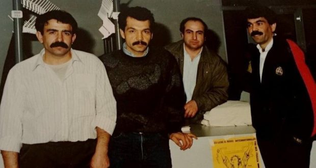
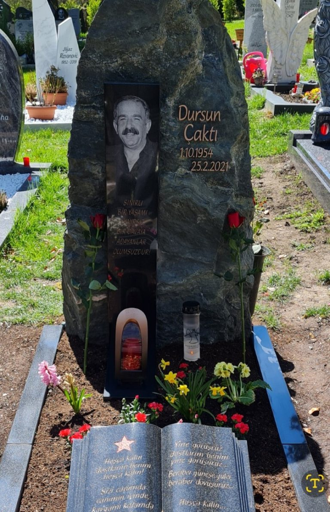

Bar Batuq Casa do Samba has been performing a series of presential show edisponibilized them on your YouTube channel. Among them is the Desamar Wheel Saideiras , Block - 1 , with Luciano Bom Hair , João Martins and Jorge André .
Bar Batuq Casa do Samba has been performing a series of presential show edisponibilized them on your YouTube channel. Among them is the Desamar Wheel Saideiras , Block - 1 , with Luciano Bom Hair , João Martins and Jorge André .
[This lan. PDF][This lan. ODT][This lan. MD][This lan. TXT][This lan. TXT LIST]
Please select your language 请选择你的语言:
Author: Rosa Minine
Description: The Batuq Casa do Samba bar has been performing a face -to -face show series and made them available on its YouTube channel. Among them is the samba wheel of
Publish Time: 2023-02-21T00:05:00-03:00
Modified Time: None
Updated Time: None
Images: ['SueldoFernandes17Fev-720x480.jpg']
Section: Agenda Cultural
Tags: ['Agenda Cultural', 'Batuq Casa do Samba', 'Bloco 1', 'Jorge André', 'Projeto Saideiras', 'Youtube']
Type: article
Bar Batuq Casa do Samba has been performing a series of presential show edisponibilized them on your YouTube channel. Among them is the Desamar Wheel Saideiras , Block - 1 , with Luciano Bom Hair , João Martins and Jorge André .
Address of Batuq Casa do Samba: Rua Belizário Pena, 1141, Penha, Rio de Janeiro/RJ.
Below: the video
News Source: https://anovademocracia.com.br/saideiras-bloco-1-roda-de-samba-online/
Author: maoist
Description: Italpizza: guilty until proven otherwise today the umpteenth hearing of the Maxi-Processo Italpizza took place, with a first tranche of 67 ...
Time: 2023-02-21T12:54:00+01:00
Images: []
Italpizza: guilty until proven otherwise
Today the umpteenth hearing of the Maxi-Processo Italpizza took place, with a firsttranche of 67 defendants, 40 DVDs of films, 150 witnesses and a number of imaginative charges of charge to the detriment of workers and trade unionist protagonists of that cycle of struggles. As always, we did not delegate the decision on our fate to the bonnevo god of the courtrooms, and in hundreds we were present in Preresidio outside the Palazzo di Giustizia in Modena. Together with a large dilavoratori group of Modena, also numerous delegations of other expressions coordinates, as well as several supportive people.
The hearing was resolved in yet another postponement to February 20, 2024, a year, for the difficulty
Techniques of the Court itself to manage a process of this dimensions, not to mention the costs and resources removed from the public coffers. There is nothing to celebrate for this postponement: potentially this process would last at least other twelve years, keeping the union and workers a limbo, without being able to demonstrate the falsehood of the accusations, without entering the police and corporate violence in theme, without any fasting perspective. However, this legal limbo has immediate consequences for the workers who are in fact considered "guilty up to proven otherwise", with refusal of citizenship questions, suspension of the disoggary permit, the citizenship card and family reunions.
In front of all this, the Modena worker has mobilized with a provincial strike, which saw a very high adhesion in the meat district, in the logistical supply chain and in the ceramic sector. In the face of the repressive strategy "Tenaglia" that for years the struggles of the Si Cobas in all the cities in which the workers and hyproletaries have "dared" to raise their heads, the only effective answers are from of the worker front against repression, on the other the development of a wider ray initiative against war policies, hunger and exploitation that the masters and their servants to the government lead to the hunger for profits and to feed the Diguerra economy and the race for global rearmament.
News Source: https://proletaricomunisti.blogspot.com/2023/02/pc-21-febbraio-processo-ai-lavoratori.html
Author: maoist
Description: 24/25 February 2 days of internationalist struggle- joint disagreement- all imperialist countries proclaim them ...
Time: 2023-02-21T13:04:00+01:00
Images: ['1919-morte-allimperialismo-mondiale-1-e1676481005257.webp']

-Jointying-
All imperialist countries are proclaimed defenders of freedom, democracy and world peace. Everyone takes to the pretext to fight ledittage and international terrorism. But in reality they are the worst terrorist of the world. They speak of peace but they are preparing feverly auna new world war of robbery. They strengthen the war industry. They are their arsenals. They mobilize enormous war machines, it is over the eastern Europe. Any year -old wars against Ipopoli of Palestine, Syria, Yemen are fomenal. They incite the outbreak of new wars in the Taiwan Strait, in the Korean peninsula, in the Chineseoriental Sea, on the Ukrainian border with Belarusia, on the marine border between Greecee Turkey. NATO, commanded by Yankee imperialism, in Ukraine through Kiev's puppet regime, contrasts its mercenary armies, military echips, to the military force of Russian imperialism. One and the other part of the pretexts to use nuclear weapons. Inter-imperialist contradictions are exacerbated to the point that a new world war with Arminucleari is no longer only a latent danger, but an imminent risk for the existence of world society and its habitat.
Basically, the wars for the interposed person and the commercial ones incurred, the emerging commercial and military blocks, the allocation of military expenditure, the production of gigantic
Weapons of mass destruction, the modernization of the armed forces and the varieties of preparations for world war, even in space, demonstrate the fierce competition for economic resources and the suipaesi political control of Asia, Africa and Latin America, including different countries of Eastern Europe. All this indicates the intensification of inter-imperialist contradictions and the race for the division of markets and world hegemony.But the same economic and social causes that push the imperialists to Guerredi robbery, become uninhabitable material conditions, unbearable for the gluhiavies of capital, material conditions for the rebellion of proletarians, peoples, nations and countries exploited and oppressed by the imperialist monopolies and daypoese It is up to the international communist movement to bring revolutionary consciousness, to organize and transform rebellions into a fighting journey against the common enemy: the world capitalist system of auction and exploitation.
Comrade Mao said: "He could burst the world war, and would take out revolutions, or they could burst everywhere and, allocating his strength to resist against them, for imperialism it would become impossible to undertake another warmark, however it goes, this is a 'He was of revolutions ".
It is up to the Communists to give an example of unity and internationalist struggle for preparations for a new imperialist world carnage; Combine the efforts to promote the revolutionary struggle in all countries for proletarian armies against the mobilization of troops and reactionary wars weapons; Making common front with all revolutionary, anti-imperialist, democratic and environmental forces that oppose the war on military support of the regimens lackeys to their imperialist masters throughout the world, especially in the semi-colonial and semi-feudal countries; Reject Edensing as traitors the opportunistic satrapies who, in the name of the proletariat of the peoples, support one of the imperialist factions, because they are all mortal of the oppressed and the exploited of the world; Supporting the revolutionary struggle led by the authentic Communistimarxist-Leninist-Maoisti, mainly the popular war in India alongside other popular wars in the Philippines, Turkey, Peru, which are today the avant-garde of the world proletarian revolution against imperialism and Ireationaries of its national guard dogs
Imperialist capitalism is in crisis! Long live socialism and communism!
O The revolution stops war or war will trigger the revolution!
Proletari and peoples of the world, let's join against imperialism!
Communist Worker Union(mlm)Colombia
Construction Committee of the Maoist Communist Party of Galicia
Maoist Communist Party - Italy
Communist(maoist)Party of AfghanistanCommunist Party of Nepal(Majority)
Communist Party of Nepal(Maoist- Revolutionary)
Red Road of Iran(maoist group)
Proletarian Party of Purba Bangla(PBSP/Bangladesh)
Communist Party of Switzerland(Red Faction)
TKP-ML
Reorganisation Communist - Brasil
Young Communist League of Switzerland
Bulgarian Workers' and Peasants' Party
Workers Voice - Malaysia
News Source: https://proletaricomunisti.blogspot.com/2023/02/pc-21-febbraio-2425-febbraio-si-estende.html
Author: maoist
Description: The Communist Party of India (Maoist), the ICSPWI (International Committee for Support for Popular War in India) and the New Magazine I ...
Time: 2023-02-21T13:09:00+01:00
Images: ['loc%20war%20bis_page-0001-1.jpg', 'loc%20guerra%20IT_page-0001.jpg', 'loc%20guerra%20SP_page-0001.jpg']
 ** The Communist Party of India(Maoist), the ICSPWI(International Committee for Popular War in India)And the new Mlmtwo-Lines Struggle international magazine(Two -line fighting)They call two days of international actions for February 24/25 against the imperialist war, inapoy
** The Communist Party of India(Maoist), the ICSPWI(International Committee for Popular War in India)And the new Mlmtwo-Lines Struggle international magazine(Two -line fighting)They call two days of international actions for February 24/25 against the imperialist war, inapoy
All MLM parties and organizations, all relevant and anti -imperialist organizations can join the declaration and can participate in autonomous forms to the two days of action and mobitation
ADHESION AND REPORTS TO ICSPWI CSGPINDIA@GMAIL.COM


News Source: https://proletaricomunisti.blogspot.com/2023/02/pc-21-febbraio-sui-muri-in-tanti-paesi.html
Author: Ângelo de Carvalho
Description: At least 93 people have been killed or are missing and approximately 2,500 are homeless on the coast of São Paulo after the heavy rains that reach
Publish Time: 2023-02-21T17:30:47-03:00
Modified Time: 2023-02-22T20:53:57-03:00
Updated Time: 2023-02-22T20:53:57-03:00
Images: ['Imagem2enchesntes-1.png', 'svg+xml;base64,PHN2ZyB4bWxucz0iaHR0cDovL3d3dy53My5vcmcvMjAwMC9zdmciIHdpZHRoPSI0MjUiIGhlaWdodD0iMjU0IiB2aWV3Qm94PSIwIDAgNDI1IDI1NCI+PHJlY3Qgd2lkdGg9IjEwMCUiIGhlaWdodD0iMTAwJSIgc3R5bGU9ImZpbGw6I2NmZDRkYjtmaWxsLW9wYWNpdHk6IDAuMTsiLz48L3N2Zz4=']
Section: Nacional
Tags: ['Desastre natural', 'enchentes', 'Litoral paulista']
Type: article
 Successive budget cuts in disaster prevention are true reason for the number of dead, missing and homeless. Photo: Playback/Instagram
Successive budget cuts in disaster prevention are true reason for the number of dead, missing and homeless. Photo: Playback/Instagram
At least 93 people have been killed or are missing and approximately 2.5 thousand are homeless on the coast of São Paulo after heavy rains that has been able to the region since February 18. The disaster occurred after decades of state and federal budget cuts in prevention of disastenatural. In addition to the deaths, disappearance and destruction of the houses, the massaphers have suffered from lack of drinking water and other resources after Odesastre, as well as complete isolation by the destruction of the highways.
The city most affected by the disasters arising from the rain was the city of Sãesebastião, where 43 of the 44 deaths have so far occurred. The other mood recorded for the region occurred in the city of Ubatuba. In addition, 49 people are missing and approximately 2,5 MILPERSONS were homeless.
The lack of structure of cities to sustain the rains do not close nursmits, disappearances or destruction of houses: several roads that give the cities of the north coast of São Paulo were destroyed or intercepted, a factor that makes it difficult to care for the masses. This is the case of the Dr. Manoel Hyppolito Rego, with several partially intercept and a fully blocked stretch, and the highway Bergiota, which is stopped and Oswaldo Cruz, with some interception points. The pronouncement of the reactionary governor of São Paulo, Tarcísio de Freitas, made clear the precarious condition of the roads of São Paulo in what tangle to the prevention of disasters: according to him, “in some points people do not know what is left of the highway. It is such a large volume of land that has moved that we even raise the hypothesis that the highway was dragged, of no longer, ”he said, as if nothing could have been done.Without waiting for the long and insufficient help from the old state, the masses affected have solved several problems with their own hands. Pins and videos show residents removing water and mud of houses as use of rods, paddles and hoes. Elderly are assisted by the youngest to roam their homes and walk through the mud to a safe place, while humanocurrents were made to carry a baby out of a mud houses.
MassaSeSolve Themselves their own problems after delayed assistance by the old state.PHOTO: ROVENA Rosa/Agência Brasil
Torrential rains followed by a high number of dead, missing and deserted is not a new phenomenon in the country. Rio de Janeiro, São Paulo,Pernambuco, Bahia, Espírito Santo and Minas GeraisThese are some of the states that have been cases of sliding and flood deaths only in the last Trêsanos. However, despite their frequency, the true reasons behind designs are never resolved by the old Brazilian state, which in the last - despite the different shift governments, virtually all official policies current - performed billionaire cuts in depreciation budgets for natural disasters, besides not to apply the available values for project execution.Made with vismeIn addition to successive budget cuts, another problem accumulates: the missing money available for the execution of disaster prevention projects. That is, even at the time when the budget to prevent natural masters was greater, the old Brazilian state did not perform the prevention projects. As a result, he performed billionaire spending on momentode containing damage after disasters. Of the total budget amount available for the between 2010 and 2022(R $ 64.1 billion), only 63.6%(R $ 40.7 billion)was used. When taken into account 2006 and 2011, only 13% of the federal government's parties on Civil Defense actions were invested in disaster prevention. While the federal government spent R $ 745 million to prevent calamities, spending on damage containment after the state -of -the -art totaled R $ 6.3 billion.
This amazing interference is not restricted to the federal government: between 2011 and 2021, the São Paulo government used values below those approved by the São Paulo Legislative Assamblea(Alesp)to prevent floods. In the years of 2015 and 2016(under the government of Geraldo Alckmin, current vice president)and Noano 2019(UNDER GOVERNMENT OF JOÃO DORIA), the execution of the value was below the budget of the Alesp approved budget. In real numbers, the government of São Paulo executed R $ 281.6 million to prevent floods in the state, while the approved was R $ 640.3 million, that is, less than half available was used. In 2016, the amount spent was $ 258.9, while the approved was $ 872.2. Already in 2019, the proportion was R $ 301.3 million reais costs R $ 759.9 million reais available.
Author: DEM VOLKE DIENEN
Time: 2023-02-21T19:44:14+00:00
Images: ['Brasilien_Gegen_die_Krise_stellen_sich_1400_Bauernfamilien_den_Bewaffneten_gegenüber_und_übernehmen_große_Ländereien_im_ganzen_Land.jpeg', 'Brasilien_Gegen_die_Krise_stellen_sich_1400_Bauernfamilien_den_Bewaffneten_gegenüber_und_übernehmen_große_Ländereien_im_ganzen_Land-2.jpg', 'Brasilien_Gegen_die_Krise_stellen_sich_1400_Bauernfamilien_den_Bewaffneten_gegenüber_und_übernehmen_große_Ländereien_im_ganzen_Land-3.jpg']
Tags: None
Category: None
 We publicly an unofficial translation of an article of the newspaper andfrom Brasil.
We publicly an unofficial translation of an article of the newspaper andfrom Brasil.
Thousands of farmers occupied dozens of Latifundia across Brazil of the "Red Carnival", a wave of cast wave that is from the movement of the struggle - country and city(FNL)Against the crisis, which the Brazilian people are consumed. So far, thieves are concentrated on the states of Alagoa, Sao Paulo(in the Pontal Doparanapanema region), Mato Grosso Do Sul and Parana. According to the FNL, it is calculated that the farmers still occupy further Latifundia in February.
According to the movement, the occupied landerings are officially due to the Union and should be intended for the "agricultural reform". However, these landerings are in the hands of a few landowners and that in most people without any documentation.
Motquades at least 1,400 families in 20 days
The FNL states that several occupations in the Altapaulista region in Sao Paulo were carried out at the beginning of February. According to the movement, 164 families farms in Nova Independencia(Santa Terezinha Farm), Montecastelo(Farm Peace)and rancharia(Marambaia Farm).
Am 9. Februar besetzten im Bundesstaat Alagoas 68 Familien ein Gebiet imViertel Zelia Rocha in der Gemeinde Arapiraca. In Maragogi besetzten 83Bauernfamilien den Bauernhof Girassol. Am 13. Februar besetzten Dutzende vonFamilien ein weiteres Gebiet in Arapiraca.
Am 17. Februar besetzten mehr als 70 Familien ein 13 Hektar großes Gebiet inPonta Grossa, Parana, das seit mehr als zehn Jahren von derWohnungsbaugesellschaft Ponta Grossa (Prolar)was abandoned. The area was used as a gauze landfill was the goal of arson and damage infestation, and part of it was taken into account by a neighboring farm. The line -up was called Dandara Dos Palmares.Also in Sao Paulo, around 540 families Latifunde Mirante do Paranapanema, Presidentente Epitacio and Teodoro Sampaio occupied around 540 families. Fall of February 19 also occupied farmers' families in Japora, Mato Grosso Do Sul, Diefernanda Farm, which was called a deceased drug dealer and canceled their entry by the dishes and are now waiting for a clarification decision.
On February 20. 40 families occupied an area in the Jacipora district, in the community racena(SP). Die Besetzung trug den Namen Jose Gonçalves da Silva.
In Paran a sind die Bauern mit der Kriminalisierung ihres Kampfes fur Landkonfrontiert
Am Karnevalssamstag (18.02.)Hat Die Militutolzei in Grossa Ponta(PR)Dozens of families driven out of an area abandoned by Prolar. The repressive powers of the old property -owned state state the farmers repressed with tranenas bombs and death threats. At the end of the campaign, 13 members of the FNL, including Derbauernfuhrer Leandro Dias, lawyer and FNL coordinator from Ponta Grossa, were arrested.
 The coordinator denounced the procedure of the military police against Derlokalzeitung A speech: “The shock was in the occupation that they spoke to a worker who even showed his work ID and explained that it was a worker, and the officials said that nothing was made and boiled Residents in his hat were burned alive ".
The coordinator denounced the procedure of the military police against Derlokalzeitung A speech: “The shock was in the occupation that they spoke to a worker who even showed his work ID and explained that it was a worker, and the officials said that nothing was made and boiled Residents in his hat were burned alive ".
In a message from the FNL it says: "After the occupation, this city administration claims Ponta Grossa that she had sold the basic suck to a construction company, and the police had discussed the wish of the private owner, even without a judicial decision on the restart".
In the SP, the landowner sends armed M Anner to the farmers' tutorization
Two FNL occupations in the Pontal de Paranapanema region(SP)on February 18, from paramilitar groups of landowners with gun gown. Against the crisis: Families occupy allies throughout Brazil
Against the crisis: Families occupy allies throughout Brazil
In the article "On the call of the FNL, farmers all over the country, which in February 2022 occupy the" Red Carnival "of and VerofficTwurde, it says:" The great mobilization that has taken place to confiscate landing all over the country corresponds to this The desire of the masses who are imposed in view of the colossal crisis that has been imposed on them will be understood to understand their problems and try to loose them through the conquest of a piece of land. The contradiction that drives the Latifundia of the Dieland takes shape and develops part of the fundamental contradiction of our society, mass against half -feudality(A contradiction that was never drawn, but was from the old state linen)".
The article ends with the words: "In this scenario, families are increasingly mobilizing to get a stucco country and see the test movements to criminalize the folk movements, and with the attackers militar and paramilitar gangs on behalf of the Latifundia".
Author: Tjen Folket Media
Description: Here we publish a joint statement signed by the Communist Föreningen (Sweden), Antiemperialist Federation (Finland), anti -imperialist collective (Denmark) and Red Front (Norway).
Publish Time: 2023-02-21T21:12:34+00:00
Modified Time: 2023-02-22T14:10:28+00:00
Images: ['standard-estandar-3-1024x678-3-1160x768.jpg']
Tags: None
Category: 'Uttalelser'
 *
*
By a commentator for the Earn Folket Media.
Here we publish a joint statement signed by the Communist(Sweden), Anti -imperialist Federation(Finland), Antiimperialistic collectiv(Denmark)and red front(Norway). Uttalelsen kan leses på engelskher.
Proletaries in all countries, unacculted you!
Following the war of the Russian imperialism against Ukraine, February 24, the Swedish and Finnish imperialism decided to join the Dennord-Atlantic Treaty organization.(NATO). NATO er et verktøy for USA-imperialismen – i dag den eneste hegemoniske supermakten – for dens hegemoni,hovedsakelig rettet mot de undertrykte nasjonene, i overensstemmelse medhovedmotsigelsen i verden, og sekundært karakteriseres NATO av deinterimperialistiske motsigelsene, hovedsakelig mot den russiskeimperialismens atomsupermakt.
NATO har ført og fører aggresjonskrig mot de undertrykte nasjonene over heleverden. For eksempel har de mange pågående “fredsbevarende” operasjoner iAfrika, og var også brukt i den beryktede krigen mot Afghanistan (2001-2021)And in Yugoslavia in the 90s.
In order to understand the Swedish and Finnish NATO processes, we must look at the interests of US imperialism, which is that it needs to counteract Denrussian aggression to consolidate its benefits in the so-called Eastern Europe. The figure, and in this is also in competition with its European NATO allies, especially German imperialism. On the other hand, US-imperialism moves focus to East Asia to combat Chinese imperialism and try to limit its ambitions, and for this the United States needs a safe base in Europe. Therefore, it is the need of US imperialism to strengthen NATO's "East Flank" by pivoting Sweden and Finland.
But it does not happen against these minor imperialists' will. On the contrary, they use the interimperialist competition among the major imperialists, and they also have their own interests in Eastern Europe, especially the Ibalt.Therefore, for the Communists, it is not a matter of defending denimperialist and false "Nordic neutrality", as the revisionists do, but to fight to overthrow the rotten imperialist order, which mainly is in an impressive, reactionary and crowded. This match means today to reconstitute the communist parties of the socialist revolution through the Var of the People's War in service of the World Revolution.
In this large and delayed task, the Communists in Sweden and the Finland Likk attach close to the most advanced match in any NATO country, the Siphesis War will be led by TKP/ML, and follow its powerful example and pick-up inspiration from it.
Down with NATO, an imperialist alliance!
Long live the revolution and the war!
For the reconstitution of the Communist parties!
Signed by: Communist(Sweden)Anti -imperialist Federation(Finland)Anti -imperialist collective(Denmark)Red front(Norway)
News Source: https://tjen-folket.no/index.php/2023/02/21/mot-svensk-og-finsk-nato-medlemskap-for-sosialistisk-revolusjon/
Author: Philippine Revolution Web Central
Publish Time: 2023-02-21T94:00:00-04:00
Modified Time: None
Description: Israeli planes bombed a crowded area in the southern part of Damascus, Syrian capital, mid -night February 19. It was as the country fell to tragedy and AB
Images: ['representational-image-israel-bombs-syria-outlook-india-photo-1024x576.webp']
Categories: ['Human Rights', 'International']
Type: article
 Israeli planes bombed a crowded area in the southern part of Damascus, Syria capital, mid -night February 19. It was as the country fell into tragedy and busy saving the victims of powerful earthquakes that hit it and Turkey in Turkey February 6th.
Israeli planes bombed a crowded area in the southern part of Damascus, Syria capital, mid -night February 19. It was as the country fell into tragedy and busy saving the victims of powerful earthquakes that hit it and Turkey in Turkey February 6th.
According to the Syrian Observatory for Human Rights, an organization based on the Saunited Kingdom, at least 10 were killed in the bombing, including a woman and a Syrian young. According to the group, the bombs target a residential area. It targeted a 7-storey building, a school-institution and offices(citadel).
Mahigpit na kinundena ng mga upisyal ng Syria ang pang-aatake, lalupa’tisinagawa ito sa panahong “naghihilom” pa ang mga sugat ng bansa dulot nglindol. Nananawagan ang Syria na kundenahin ng UN ang aktong ito ng Israel.Anila, dapat umano itong ituring na krimen laban sa sangkatauhan.
Daan-daan nang ulit na binomba ng Israel ang Syria nang walang probokasyon sanakaraang dekada. Madalas na walang inilalahad ang Israel na dahilan ng mgapang-aatakeng ito.
Huling bimomba ng Israel ang Syria noong Enero 2 kung saan pinatamaan nito anginternasyunal na paliparan sa Damascus. Apat na Syrian ang napatay sapambobomba at dalawa ang nasugatan.
News Source: https://philippinerevolution.nu/angbayan/sa-gitna-ng-trahedya-syria-binomba-ng-israel/
Author: Philippine Revolution Web Central
Publish Time: 2023-02-21T95:00:00-04:00
Modified Time: None
Description: Residents of Brooke’s Point, Palawan, Palawan set up a barricade on February 18 to stop the illegal and destructive mines of Ipilan Nickel Corporation (INC) in the area.
Images: ['barikadang-bayan-brookes-point-palawan-1024x579.jpeg']
Categories: ['Enivronment', "People's Struggles"]
Type: article
 Residents of Brooke’s Point, Palawan, set up a barricade on February 18 to stop illegal and destructive mines of Nickel Corporation(INC)in the place. According to the environmental groups, the mine operates even without permission from the local government.
Residents of Brooke’s Point, Palawan, set up a barricade on February 18 to stop illegal and destructive mines of Nickel Corporation(INC)in the place. According to the environmental groups, the mine operates even without permission from the local government.
They built the barricade after the company refused to comply with the local government's assignment to stop the operation. According to Brooke’s Point Vice Mayorjean Feliciano, February 6 has released Mayor Cesareo Benedito Jr Sainc to stop their operations as it has no permission to operate this year.
"The people themselves are organizing the action to fight for their healing," Feliciano said. He added that they are grateful to the Brooke’s Point's people who are willing to sacrifice to protect their natural resources, livelihoods and future.
In December 2022 to January, the Brooke's Point sank into the flood due to no rain from the beginning of the year due to the "shear line" or the different wind directions, the rains and low-pressurearea.
According to the residents, they have only experienced such intense floods. Suddenly the water level in the Tigaplan river, they said. According to the officials, in 1975 it was last experience of this flood flood. Resident Mary Jean Feliciano has strongly blamed the intense flooding of destructive mining in the area.
The INC is a subsidary of the Global Ferronickel Holdings, the second largest company that produces nickel in the country. At least 2,800 hectares of its mine in Palawan will cross the four barangays of Brooke's Point. In 2020, its income increased by 43% or P735 million. Meanwhile in 2017, the INC was involved in the cutting of 15,000 trees to the over 100 hectares of natural forest at Brooke’s Point.
In the province of Palawan, 28,000 hectares or 1.89% of 1.5 million hectares of all -provincial territory were covered by the operations of the damaged mine in 2021.
News Source: https://philippinerevolution.nu/angbayan/barikadang-bayan-kontra-mina-itinayo-sa-palawan/
Author: Philippine Revolution Web Central
Publish Time: 2023-02-21T96:00:00-04:00
Modified Time: None
Description: The Philippine Senate staff will receive additional media after Senate President Juan Miguel Zubiri announced yesterday that their Taawans announced yesterday
Images: ['senate-of-the-philippines.jpg']
Categories: ['Economy', 'Government Employees']
Type: article
 The Philippine Senate Employees will receive additional discharges after Senate President Juanmiguel Zubiri announced yesterday that they raised their void from ₱ 12,200 to ₱ 50,000.(SENATE), this additional benefit of the Senate staff has been the result of their decades of struggle.
The Philippine Senate Employees will receive additional discharges after Senate President Juanmiguel Zubiri announced yesterday that they raised their void from ₱ 12,200 to ₱ 50,000.(SENATE), this additional benefit of the Senate staff has been the result of their decades of struggle.
An estimated 3,000 Senate staff will receive additional loss. According to Zubiri it will be given this coming August.
In this regard, the Confederation for Unity, Recognition Andadvancement of Government Employees, said(Courage)that "hopefully all" or should all government amendments receive this as a relief and incentive of staff in the face of the increasing crisis.
According to the Senate, "It is justified and fair to provide extra services to keep up with the salaries ... living salaries and labor protection is the state of the state of its people."
The union pointed out that beyond the additional, "they cooperated with workers, other government staff and the Filipino people for raising wages/salaries, extra benefits and help to relieve the hardships suffered by no Increasing prices of commodity and increasing economic crisis. "
According to Santiago Dasmariñas Jr., the National President of the Courage, "the senator also said that the salaries of most of the people are not" living wage ". So we continue to call for the national minimum wage of staff and workers."
Government staff now insist that the staff nationwide staff are ₱ 33,000 per month.
News Source: https://philippinerevolution.nu/angbayan/mga-kawani-sa-senado-naigiit-ang-dagdag-na-alawans/
Author: Philippine Revolution Web Central
Publish Time: 2023-02-21T97:00:00-04:00
Modified Time: None
Description: State forces killed farmers Vernon Bonggat on February 20, at his home in Barangay Tablon, Oas, Albay. Killing him is believed to be a raid of forces
Images: ['human-rights-killings-1024x659.png']
Categories: ['Human Rights']
Type: article
 State forces killed farmers Vernon Bonggat on February 20, at his home in Barangay Tablon, Oas, Albay. The murder was believed to be a state of raging forces after the 49th IB's fabric against the New People's Army(BHB)On February 15 Sabarangay Ramay.
State forces killed farmers Vernon Bonggat on February 20, at his home in Barangay Tablon, Oas, Albay. The murder was believed to be a state of raging forces after the 49th IB's fabric against the New People's Army(BHB)On February 15 Sabarangay Ramay.
According to the report, two military agents forced his house around 8:30 pm. Bonggat's house is a kilometer away from a section of the 49th IB operating in the area.
The barangay and neighboring communities were a week under the intense militarization following the NPA's armed action last Sunday.
Civilians Armancio Malto, who was killed by the 49th IB in Purok 5, Barangay Badbad in March 2022.
The 49th IB was also involved in the murder of two Barangay Badbad Barangay Barangay 15, 2020.
News Source: https://philippinerevolution.nu/angbayan/magsasaka-pinatay-ng-militar-sa-albay/
Author: Philippine Revolution Web Central
Publish Time: 2023-02-21T98:00:00-04:00
Modified Time: None
Description: It is against human rights and international humanitarian laws that the Armed Forces of the Philippines (AFP) forces in a family in Sitio Gabonan, Barangay Dumagaguin have been harassed by the law.
Images: ['ang-bayan-dailies-human-rights-violations-hrvs-1024x502.png']
Categories: ['Human Rights']
Type: article
 It is against human rights and international humanitarian laws that the Armed Forces of the Philippines forces are stressing over(AFP)At a family in Sitio Gabonan, Barangay Dumalaguing, Impasug-ong, Bukidnon on 29. 29. The family was accused of helping and delivering supply Sabagong People's Army(BHB).
It is against human rights and international humanitarian laws that the Armed Forces of the Philippines forces are stressing over(AFP)At a family in Sitio Gabonan, Barangay Dumalaguing, Impasug-ong, Bukidnon on 29. 29. The family was accused of helping and delivering supply Sabagong People's Army(BHB).
Niransak ng mga sundalo ang bahay ni Nerisa Lumayag, kanyang asawa at mga anakat tinakot sila. Sampung sundalo ang sumugod sa bahay ng mag-anak. Nagdulot nglabis na takot ang teroristang panggigipit na ito ng mga sundalo sa pamilyalaluna sa mga bata.
Ayon sa ulat, bago sila sinugod ng mga sundalo, minanmanan ang bahay nila nangmadaling araw ng Enero 29 ng mga bayarang aset ng kaaway sa barangay.
Kasalukuyang tumutuloy sa sentro ng barangay ang pamilya dahil sa takot nabumalik sa kanilang komunidad.
Ang pag-atake ng militar ay labag sa Comprehensive Agreement on Respect forHuman Rights and International Humanitarian Law (CARHRIHL), signed by the National Democratic Front of the Philippines and the Government of the Republic of Pilipinas.
The section states in respect of international humanitarian law, Article 4, Number 4:
"The civilian population and civilians will be treated as civilians and varying to warriors and, along with their property, are not supposed to be."
News Source: https://philippinerevolution.nu/angbayan/pamilyang-inaakusahang-tumulong-sa-bhb-sa-bukidnon-ginipit-ng-militar/
Author: Philippine Revolution Web Central
Publish Time: 2023-02-21T99:00:00-04:00
Modified Time: 2023-02-22T07:25:47+00:00
Description: The Santos Binamera Command New People's Army - Albay (SBC BHB - Albay) strongly condemns the shooting of one of two men entering the home of farmers Vernon Bonggat, with
Images: ['npa-albay-map-1024x576.png']
Categories: ['Human Rights']
Type: article
 Santos Binamera Command New People's Army -Albay army is strongly condemned(I love you - Albi)The shooting of one of the two men entered the home of farmers Vernon Bonggat, married and children, 50 years old, last night at 8:30 pm, February 20, current, resident Brgy Tablon, Oas, Albay.
Santos Binamera Command New People's Army -Albay army is strongly condemned(I love you - Albi)The shooting of one of the two men entered the home of farmers Vernon Bonggat, married and children, 50 years old, last night at 8:30 pm, February 20, current, resident Brgy Tablon, Oas, Albay.
It is just a kilometer away from a section of the 49thibpa currently operating in the area. It was a week when soldiers trooped the area for the incident on February 15 in Brgy Ramay of the same town.
This is how the 49thibpa, the civilian resisted their reward. They will also be killed in two barangay officials Brgy Batbat on September 15 2020. The victims are still unjust. Many crimes among Albayano people have a bloody49thibpa, they do not deserve to live in the Albay province!
The SBC NPA - Albay is calling on the Albayano people, church people and media to expose such crimes by49thibpa soldiers. It is not true that they are for peace, they are the number one violation of the human right of the working class.
News Source: https://philippinerevolution.nu/statements/magsasaka-pinatay-ng-ahente-ng-estado/
Author: maoist
Description: The anti -capitalist proletarian assembly of Rome on February 18th has made it possible to give continuity to work to unite the struggles, ...
Time: 2023-02-22T07:34:00+01:00
Images: []
The anti -capitalist proletarian assembly of Rome on February 18 has allowed to give continuity to work to unite the struggles, advance the line and practice of the single class of class at national level, need for the proletarians and realities well beyond the logichedeas today Intersindacali, of the intergroups, restricted or extended they are, and triggers alternative to the referentiality car expressively expressed on the occasion of 2 and 3 December.
The assembly was attended by representatives of the main companies mainly diluted by the Slai Cobas for the class union of 5 cities North and South, the companions of Rome and Viterbo of the Diviterbo Fight Committee, operating in the network of collectives organized in Rome, in the coordination regional health, and in other basic trade union realities and saying, class against class, communist proletarians.
Present the international red rescue and companions actively engaged in the so -called campaign; The
Researcher Fabrizio Chiodo intervened on the vaccine front, industracapitalistic pharmaceutical and war.
Roman participation in the assembly was penalized for lacontemage of other important initiatives, the two days are prepared for the so -called and the war of 24 and 25 in Rome.
The No Muos movement, companionimenti on the war of the historical archive "Benedetto Petrone/Pugliaantonista" of Brindisi participated with written interventions; And they had given the willingness to intervene Ilcalp of Genoa and the lawyer. Gianluca Vitale, then not intervened in time.
The discussion was centered on the fight against war and the Governomeloni, in continuity with those that preceded it, which has a visoconverse of analysis and political setting in practice and in the struggle to develop, even if on the basis of differences dependent on matricitis, policies of the organizations present.
But the really important thing is the role that the interventions of Operai, workers who told the stadium of their fight but Loha enriched in a general picture of how to make them advance on the piano, from Dalmine to the Beretta di Bergamo, to the steelries and the exilvas were played. , from the precarious workers of Palermo to the health of Rome.
Other interventions by other realities prepared for the Assembly will still be in the mailing list.On this, however, the debate has not developed enough and will have to be in depth.
Great space in the Assembly had the battle for Alfredo Cossedo.The intervention of Sri and other companions, he obtained great attention from the prosecutor present, who also asked with questions to deepen the current and strategic political wool of the battle on 41bis and the most struggle struggle Against the repression of the bourgeois state and the repressive suiorgislation which, however motivated, has the purpose of repressing class lalotta, the revolutionary avant -garde.
In the assembly it was also said that the battle of Alfredo, Deglannarchists and communist realities, revolutionary proletarian who are active this campaign is of great teaching for all fronts of the struggle to say how to fight the state and this government in the current situation.
The Assembly is actively engaged in all its components on the days 24 and 25 February on jobs and in the squares against the war, Italian imperialism, its state, its government, supporting and also participating in the initiatives of Genoa launched from the Calp, of Milan, of Rome, etc.
Anti -capitalist proletarian assembly - Rome February 18th
News Source: https://proletaricomunisti.blogspot.com/2023/02/pc-22-febbraio-assemblea-proletaria.html
Author: maoist
Description: Research conducted by Bilendi through 4693 interviews on behalf of an Observatory of Opinion in collaboration with the Catt University ...
Time: 2023-02-22T07:52:00+01:00
Images: []
Research conducted by Bilendi through 4693 interviews on behalf of an observatory of opinion in collaboration with the Catholic University Indicanel Carovita, the main problem 36%, climate change 16%, war inucraine 14%... being clear the existing link Between caravan and war, he was seeing how the interests of the citizens, including the majority ècostititititititit heard by proletarians and popular masses goes in opposite direction and the action of masters and government.
These data contribute to partly explain Dimassa abstention.
They are data that encourage the action of the Communists and the classy and combative processing union forces, in organizing the struggle which is the possible one possible in this situation.
News Source: https://proletaricomunisti.blogspot.com/2023/02/pc-22-febbraio-guerra-e-carovita-con.html
Author: fannyhill
Description: None
Time: 2023-02-22T07:53:00+01:00
Images: ['caretello%20guerra%20ilva.jpg', 'foglio%20x%20FI_page-0001.jpg']


News Source: https://proletaricomunisti.blogspot.com/2023/02/pc-22-febbraio-il-24-alle-fabbriche.html
Author: maoist
Description: Video your https://www.lanazione.it/firenze/cronaca/corteo-firenze-p42z28ny https: //www.lanazione.it/firenze/cronaca/corteo-antifascista-a-fi ...
Time: 2023-02-22T08:38:00+01:00
Images: ['63f502836a35a.jpeg']
Video your
https://www.lanazione.it/firenze/cronaca/corteo-firenze-p42z28nyhttps://www.lanazione.it/firenze/cronaca/corteo-antifascista-a-firenze-lw5yds87 https://video.corrierefiorentino.corriere.it/aggression-al-micalangiolo-il-corto-dotrasta/85361086-b53-4b5b-3Ab-c2b6dce97xlk

News Source: https://proletaricomunisti.blogspot.com/2023/02/pc-22-febbraio-firenze-e-antifascista.html
Author: maoistroad
Description: On Tuesday evening, February 21, in Athens, the arrival of US Secretary of State Anthony Blinken in Greece was protested in Athens with ...
Time: 2023-02-22T10:24:00-08:00
Images: ['54F0B8DD-EC30-4586-B655-BA9E41D25661-300x220.jpg']
 On Tuesdayevening, February 21, in Athens, the arrival of US Secretary of StateAnthony Blinken in Greece was protested in Athens with an Anti-ImperialistAnti-Fascist action. Greek Revolutionary organizations gathered in Athens propilia at 18.00 in theevening, protesting the arrival of US Secretary of State Anthony Blinken withthe participation of thousands of people. The action, in which Anti-Fascistand Anti-Imperialists participated, started in Athens and lasted until the USEmbassy.
On Tuesdayevening, February 21, in Athens, the arrival of US Secretary of StateAnthony Blinken in Greece was protested in Athens with an Anti-ImperialistAnti-Fascist action. Greek Revolutionary organizations gathered in Athens propilia at 18.00 in theevening, protesting the arrival of US Secretary of State Anthony Blinken withthe participation of thousands of people. The action, in which Anti-Fascistand Anti-Imperialists participated, started in Athens and lasted until the USEmbassy.
Along the way, the crowd shouted the slogans: Let the US and NATO bases beclosed, Imperialism and NATO out, Long live Greece-Turkey, the Brotherhood ofthe Syrian peoples. TKP/ML Militants participated in the action in Athensin the same cortege together with the sister organization KKE(ML).
AHM ATHENS
21/02/2023
News Source: https://maoistroad.blogspot.com/2023/02/athens-against-blinkens-visit-strong.html
Author: SERVIR AL PUEBLO
Publish Time: 2023-02-22T10:48:57+00:00
Modified Time: 2023-02-22T10:48:57+00:00
Description: Oaxaca/Mexico. On Sunday, February 19, the State Youth Assembly was held, where different committees of young students and workers of the city and the countryside, from U ...
Images: ['image-18.png', 'image-16.png']
Type: article
 Morelos/Mexico. 4 years after the cowardly murder of fellow Samir Floresoberanes by the narco -esteem, who was an opponent to the megaproject of disappointment and death "Integral projector Morelos", today a career for the life of the peoples was carried out, where the most Of 200 people of different ages and geographies of the country participated. It is known that the intellectual managers of their murder are the 3 levels of government, but in the investigations they only point to 4 material authors, of which one is in jail, another was killed, an fugitive and one more unidentified, before the disinterest of the Attorney General of the State of Morelos, demand that the case be taken to the Attorney General's Office and seal to declare Erik Flores, federal delegate of Morelos, and Cuauhtémocblanco, governor of Morelos. Justice for fellow Samir and punishment for guilty!NO TO THE INTEGRAL PROJECT MORELOS!
Morelos/Mexico. 4 years after the cowardly murder of fellow Samir Floresoberanes by the narco -esteem, who was an opponent to the megaproject of disappointment and death "Integral projector Morelos", today a career for the life of the peoples was carried out, where the most Of 200 people of different ages and geographies of the country participated. It is known that the intellectual managers of their murder are the 3 levels of government, but in the investigations they only point to 4 material authors, of which one is in jail, another was killed, an fugitive and one more unidentified, before the disinterest of the Attorney General of the State of Morelos, demand that the case be taken to the Attorney General's Office and seal to declare Erik Flores, federal delegate of Morelos, and Cuauhtémocblanco, governor of Morelos. Justice for fellow Samir and punishment for guilty!NO TO THE INTEGRAL PROJECT MORELOS!
 Oaxaca/Mexico. On Sunday, February 19, the Youth Estate Assembly was held, where different committees of young students and workers from the city and the country To analyze and draw their tasks, as well as to appoint a new Juvenile State Committee, it helps to coordinate and project the tasks of its different organizations. New colleagues assumed that work to raise, defend and apply the political line of our organization.
Oaxaca/Mexico. On Sunday, February 19, the Youth Estate Assembly was held, where different committees of young students and workers from the city and the country To analyze and draw their tasks, as well as to appoint a new Juvenile State Committee, it helps to coordinate and project the tasks of its different organizations. New colleagues assumed that work to raise, defend and apply the political line of our organization.
_Reproduced from: <https://solrojist
Author: SERVIR AL PUEBLO
Publish Time: 2023-02-22T10:55:42+00:00
Modified Time: 2023-02-22T10:55:42+00:00
Description: Thousands of peasants occupied dozens of estates throughout Brazil during the "Red Carnival", a wave of occupations led by the National Front of Lucha - Field and City (FNL) Contr movement (FNL) cont ...
Images: ['image-19.png', 'image-20.png', 'image-21.png']
Type: article
20/02/2023
 Thousands of peasants occupied dozens of estates throughout Brazil during the "Red Carnival", a wave of occupations led by the Front of Fight - Ciudad and City movement(FNL)Against the crisis that hit the villabrasileño. Until now, occupations are concentrated in Aagoas, São Paulo(In the Pontal do Paranapanema region), Mato Grosso do Sul and Paraná. According to FNL, the forecast is that the peasants occupy more estates during February. According to the movement, the occupied lands officially belong to the union and should be destined to the "agrarian reform". However, these struggles are in the hands of a few owners and, in most Los Casos, without any documentation. Occupations mobilized at least 1,400 families in 20 days the FNL claim that at the beginning of February several occupations took place in the region of Alta Paulista, in São Paulo. According to the movement, 164 families occupied haciendas in Nova Independence(SANTA TEREZINHA FARM), Monte Castelo(FARM PEACE)and racharia(Fazendarambaia). El 9 de febrero, en el estado de Alagoas, 68 familias ocuparon unterreno en el barrio Zélia Rocha, ubicado en el municipio de Arapiraca. EnMaragogi, 83 familias campesinas ocuparon la Granja Girassol. El 13/02,decenas de familias ocuparon otra zona en Arapiraca. El 17 de febrero, un áreade 13 hectáreas abandonada hace más de diez años por la Empresa de Vivienda dePonta Grossa (Prolar), in Ponta Grossa, Paraná, was occupied by more than 70 family. The area was currently used for the garbage tank, fire erabl and pest development, being part of it invaded by a neighboring farm. The occupation was named two palmars. On 18, about 410 peasant families occupied three large estates in the ease of São Paulo, in the Paranapanema Pontal region. At that time, the areas were occupied in Marabá Paulista(Fazenda Floresta and São João Farm), Rosana(São Lourenço Farm), President Venceslau(São Francisco Farm)and Sandovalina(Fazenda São Domingos, La Prophedeadterritorial Area Norway Umoe Bioenergy, where Hubo un attack on Los Campesinos en2022).
Thousands of peasants occupied dozens of estates throughout Brazil during the "Red Carnival", a wave of occupations led by the Front of Fight - Ciudad and City movement(FNL)Against the crisis that hit the villabrasileño. Until now, occupations are concentrated in Aagoas, São Paulo(In the Pontal do Paranapanema region), Mato Grosso do Sul and Paraná. According to FNL, the forecast is that the peasants occupy more estates during February. According to the movement, the occupied lands officially belong to the union and should be destined to the "agrarian reform". However, these struggles are in the hands of a few owners and, in most Los Casos, without any documentation. Occupations mobilized at least 1,400 families in 20 days the FNL claim that at the beginning of February several occupations took place in the region of Alta Paulista, in São Paulo. According to the movement, 164 families occupied haciendas in Nova Independence(SANTA TEREZINHA FARM), Monte Castelo(FARM PEACE)and racharia(Fazendarambaia). El 9 de febrero, en el estado de Alagoas, 68 familias ocuparon unterreno en el barrio Zélia Rocha, ubicado en el municipio de Arapiraca. EnMaragogi, 83 familias campesinas ocuparon la Granja Girassol. El 13/02,decenas de familias ocuparon otra zona en Arapiraca. El 17 de febrero, un áreade 13 hectáreas abandonada hace más de diez años por la Empresa de Vivienda dePonta Grossa (Prolar), in Ponta Grossa, Paraná, was occupied by more than 70 family. The area was currently used for the garbage tank, fire erabl and pest development, being part of it invaded by a neighboring farm. The occupation was named two palmars. On 18, about 410 peasant families occupied three large estates in the ease of São Paulo, in the Paranapanema Pontal region. At that time, the areas were occupied in Marabá Paulista(Fazenda Floresta and São João Farm), Rosana(São Lourenço Farm), President Venceslau(São Francisco Farm)and Sandovalina(Fazenda São Domingos, La Prophedeadterritorial Area Norway Umoe Bioenergy, where Hubo un attack on Los Campesinos en2022).
 The coordinator denounced the action of the PM to the local newspaper to Rede: “Or crashed in the occupation, they approached a worker, who even showed a job, saying that he was a worker, and still the police said that they were not interested in, and that they would burn this resident in SUCHOZA alive. ” According to the FNL, in a note, "after the occupation, the municipality of Ponta Grossa states that it sold the land to a construction company and ElPM would have complied with the application of the private owner, even without a judicial decision of recovery." In SP, landowners send gunmen to terrorize the peasants two occupations of the FNL, in the Paranapanema Depontontal region(SP), they were shot to bullets on 18/02 by side bands of the estates. In Rosana, in the Fazenda São Lourenço, armed men fired against peasant families, advanced with machines on the motorhomes and entrenched themselves in front of the camps that already existed in the region. According to the movement, there was also a strong political apparatus, with the presence of helicopters and vehicles. In President Venceslau, in the camp of Marielle Franco, heavily armed men invaded the occupation and expelled the peasant families of the place.
The coordinator denounced the action of the PM to the local newspaper to Rede: “Or crashed in the occupation, they approached a worker, who even showed a job, saying that he was a worker, and still the police said that they were not interested in, and that they would burn this resident in SUCHOZA alive. ” According to the FNL, in a note, "after the occupation, the municipality of Ponta Grossa states that it sold the land to a construction company and ElPM would have complied with the application of the private owner, even without a judicial decision of recovery." In SP, landowners send gunmen to terrorize the peasants two occupations of the FNL, in the Paranapanema Depontontal region(SP), they were shot to bullets on 18/02 by side bands of the estates. In Rosana, in the Fazenda São Lourenço, armed men fired against peasant families, advanced with machines on the motorhomes and entrenched themselves in front of the camps that already existed in the region. According to the movement, there was also a strong political apparatus, with the presence of helicopters and vehicles. In President Venceslau, in the camp of Marielle Franco, heavily armed men invaded the occupation and expelled the peasant families of the place.
 Faced with the crisis, families take estates throughout Brazil the article "At the request of the FNL, peasants occupy estates throughout the country", published by the AND in February 2022, during the "red carnival" of that year, he says: " The great mobilization that resulted in the taking of great haciendas throughout the country, responds to the desire of the masses of workers who, before the colossal crisis that are imposed on them, are taken to understand and know how to solve their problems, conquering a piece of land. With this, it takes shape and develops the contradiction that pushes peasants sorrara versus the estate, as part of the fundamental contradiction of society, masses versus semi -feudalism(contradiction that never leaflet, but fostered by the old state)” The article concludes: "It is the context that more and more families mobilize to achieve Uterreno, in the face of the attempt to criminalize the popular movements of military and paramilitary bands at the request of the terratic ones."_Traduction obtained from: https://vnd-peu.blogspot.com/ _
Faced with the crisis, families take estates throughout Brazil the article "At the request of the FNL, peasants occupy estates throughout the country", published by the AND in February 2022, during the "red carnival" of that year, he says: " The great mobilization that resulted in the taking of great haciendas throughout the country, responds to the desire of the masses of workers who, before the colossal crisis that are imposed on them, are taken to understand and know how to solve their problems, conquering a piece of land. With this, it takes shape and develops the contradiction that pushes peasants sorrara versus the estate, as part of the fundamental contradiction of society, masses versus semi -feudalism(contradiction that never leaflet, but fostered by the old state)” The article concludes: "It is the context that more and more families mobilize to achieve Uterreno, in the face of the attempt to criminalize the popular movements of military and paramilitary bands at the request of the terratic ones."_Traduction obtained from: https://vnd-peu.blogspot.com/ _
Commercial
Author: fannyhill
Description: Milan continues the campaign for and beyond March 8. This morning in Milan flyer and banquet to the tumor institute to give voice to C ...
Time: 2023-02-22T11:18:00+01:00
Images: ['IMG20230222064346.jpg', 'IMG20230222064326.jpg', 'IMG20230222063929.jpg']
Milan continues the campaign for and beyond March 8. This morning in Milan Florainaggioe banquet to the tumor institute to give voice to those who do not have it, as a lastgrande majority of workers, in particular in healthcare. An invitation to participate in our Thematic Assembly of Women/Work Tomorrow, Thursday 23 hours 5 pm(link: https://meet.google.com/fdd-atkx-bzc) Where we can exchange ideas and combine on burning topics like lagurar and the struggle of the courageous Iranian women, think what we can do to change our whole life. _ MFPR Milano _ Taranto With workloads to do in a few hours the workers of the Asilinon make it more, and the salary is not enough even to survive!Work increases, working conditions attack health and wages!March 8th!And if there are no answers still strike!_ Slai Cobas and USB Taranto workers _
Photo of Milan:


News Source: https://femminismorivoluzionario.blogspot.com/2023/02/verso-l8-marzo-milano.html
Author: maoist
Description: Accident in Ansaldo, Simone Bonori struggles between life and death: strike and procession of workers. Procession from the west ve ...
Time: 2023-02-22T12:31:00+01:00
Images: ['sciopero-incidente-simone-bonori-791278.jpg', 'sciopero-incidente-simone-bonori-791288.large.jpg', 'sciopero-incidente-simone-bonori-791287.large.jpg', 'sciopero-incidente-simone-bonori-791283.large.jpg', 'sciopero-incidente-simone-bonori-791280.large.jpg', 'generico-febbraio-2023-791284.jpg']
Lotta tra la vita e la morte nel reparto di rianimazione dell'ospedale SanMartino Simone Bonori, 36 anni , operaio specializzato, ferito gravementesul lavoro ieri pomeriggio nello stabilimento di Ansaldo Energia a Fegino.
E questa mattina i colleghi di fabbrica hanno deciso di scioperare escendere in piazza per chiedere più sicurezza. " Ansaldo: macchinari anniSettanta e zero investimenti, vergogna!" si legge su uno striscione portatostamani dai metalmeccanici davanti ai cancelli di Fegino. "Forza Simone, siamotutti con te", l'altro striscione, un messaggio disperato viste le condizionidell'uomo.L'incidente si è verificato nel momento da un tornio si è staccatauna componente in metallo che ha sfondato una paratia che ha colpito l'operaio in pieno volto. Bonori è in coma farmacologico. "Le sue condizionirestano stabili nella loro gravità. La prognosi è riservata. Allo statoattuale il paziente non necessita di intervento chirurgico", riporta ilbollettino medico del San Martino di questa mattina. Il 36enne lavora da circatre anni ad Ansaldo Energia. Abita in via Podestà, alle spalle di Pra'.
 The Prosecutor's Office of Genoa has opened an investigation and therefore seized the machinery is the area of the department where the accident occurred. IlFascicolo this morning was entrusted to the deputy prosecutor Michelelongo , of the work group, which is making a inspection in the department in the department of the serious accident took place.
The Prosecutor's Office of Genoa has opened an investigation and therefore seized the machinery is the area of the department where the accident occurred. IlFascicolo this morning was entrusted to the deputy prosecutor Michelelongo , of the work group, which is making a inspection in the department in the department of the serious accident took place.
__6Accident at work in Ansaldo Energia, workers in the square for Simone Bonori
The workers striked already yesterday and the protest continues this morning: garrison in front of the gates and then procession to Piazza Massena and then achor Sampierdarena. Before departure Federico Grondona, Fiom, coordinator of the RSU , updated colleagues on the health conditions and attacked the company hard for the old of the machinery.
 "Today is A day of sadness but also a day thinning - he said - the responsibilities of what happened will be lightened by the judiciary but we cannot fail to make a reflection, Lamacchina on which Simone worked is from 1979, He is 44 years old, anyone who can understand the degree of security that can give you a machine of 44 years ago, even if I have been ".
"Today is A day of sadness but also a day thinning - he said - the responsibilities of what happened will be lightened by the judiciary but we cannot fail to make a reflection, Lamacchina on which Simone worked is from 1979, He is 44 years old, anyone who can understand the degree of security that can give you a machine of 44 years ago, even if I have been ".
"This is not a problem of security culture, as said yesterday, security is an investment problem, you have to put money, or you buy new machinery or we on these machinery we don't work anymore, they go to work The managers . Here is what the recapitalization is for, "concluded the trade unionist.
News Source: https://proletaricomunisti.blogspot.com/2023/02/pc-22-febbraio-grave-incidente.html
Author: Redação de AND
Description: The PSOL called the Supreme Court on the 14th, to make, as an institution, a “full interpretation” of article 142 of the Federal Constitution; next step, start
Publish Time: 2023-02-22T14:48:10-03:00
Modified Time: 2023-02-22T15:09:25-03:00
Updated Time: 2023-02-22T15:09:25-03:00
Images: ['editorialfevereiro2023-scaled.jpg']
Section: Editorial
Tags: ['8 de janeiro']
Type: article
 The PSOL called the Supreme Court on the 14th, to make, as an institution, a “full interpretation” of article 142 of the Federal Constitution; Next step, movements begin to emerge in Congress to review the writing of the article, attempt authorized by the PT summit and Luiz Inacio. Article 142 is a score of the coup taunts and the protection of the Armed Forces: It is unanimous among the high officers the interpretation according to that article gives the forces to intervene to “defend the homeland” and “the constitutional powers”, even though Without being triggered by one of the “threepowers”, contrary to what that article conditions. Recently, the STF minister Gilmar Mendes has revealed that former Natero Commander Villas-Bôas questioned whether he had agreement with the group interpretation.
The PSOL called the Supreme Court on the 14th, to make, as an institution, a “full interpretation” of article 142 of the Federal Constitution; Next step, movements begin to emerge in Congress to review the writing of the article, attempt authorized by the PT summit and Luiz Inacio. Article 142 is a score of the coup taunts and the protection of the Armed Forces: It is unanimous among the high officers the interpretation according to that article gives the forces to intervene to “defend the homeland” and “the constitutional powers”, even though Without being triggered by one of the “threepowers”, contrary to what that article conditions. Recently, the STF minister Gilmar Mendes has revealed that former Natero Commander Villas-Bôas questioned whether he had agreement with the group interpretation.
In turn, Luiz Inácio and the PT bench in the Senate has worked hard to empty and prevent the work of the CPI that would investigate the basses of January 8, when the far-right mob, shooting the ambiguous statements of generals, invaded the headquarters of the "three powers" believers that it would challenge "military intervention". It is worth remembering, strangely, that neither the troops of the Presidential Guard Battalion nor the competent Osorgans of the Presidency of the Republic, no one called the "Plan Esquero" to prevent the action of the fascists. Why don't Luiz Inacio want this? Why are you putting hot cloths and stone on such a serious nation, where there are very strong strokes of coup between the high mandas of the reserve and active?
It will be no use trying to move Article 142 of the Constitution. The hole is very much below.Second, that the imposition of a military “moderating power” on the country, as a preventive and permanent contracting force, is the most revealing element of exploiting and oppressive class, present in all contestations, the result of never having triumphed the democratic revolution Norpaís. In the monarchy, this was carried out at the Emperor, who had the forces; In six other, already in the Republic, expressed themselves in the fact that the Armed Forces have the legal attribution the "defense of the law and the order" and the "defense of constitutional chiefs". The ruling classes, in short, have always had a central preoccupation to have a counter -infringing device, since the are on the agenda, sometimes more, sometimes less.
Third, as an expression of the said above, it is seen that the first-class spokesmen of the ruling classes were opposed to the “correction” of the doartigus. O Globo and Estadão, to be in two press monopolies where the reactionary intelligentia inactive, in recent editorials, as a “big mistake” this movement would be, because the constitution would be crystalline to define the functions of the Armed Forces. Really?
But it is still an unfortunate illusion that it is possible to block the gagolpist movement with deliberations of institutions that only have power because they are dengers in bayonets of the Armed Forces. For this reason, even, the space of this initiative tends not to prosper. The virus_ of coup is a consent in the history of the country, because the emergence of a democratic revolution is a constant. To defeat this counterrevolutionary offensive there is only one way: to raise the mass movement, in defense of its immediate and general interests, of which the democratically conquered rights and freedoms are parts and freedoms, sometimes threatened and the others never achieved; Joining him, step by step, with the struggle for a regime of new democracy. On the contrary, this is the only barrier that can dissuade the scammers and, nolimite, to defeat him even if he imposes himself.
News Source: https://anovademocracia.com.br/editorial-semanal-so-a-luta-popular-pode-derrotar-o-virus-golpista/
Author: socialistiskrevolution
Publish Time: 2023-02-22T15:22:28+00:00
Modified Time: 2023-02-22T15:22:28+00:00
Description: Our Finnish friends from Punalippu (Red Fane) share documentation of posters, set up by revolutionaries, against the reactionary Finnish parliamentary elections, which will take place on April 2 this year. Poster…
Images: ['vevk.png']
Type: article
Categories: ['Uncategorized']
Our Finnish comrades from Punalippu (Red tab)Sharing documentation of posters, set up by revolutionaries, against the reactionary Finnish parliamentary elections, which finds place on April 2 this year.
The posters for election boycott have the parols »Choosing, no!Revolution, yes!'.
 Advertisement
Advertisement
News Source: https://socialistiskrevolution.wordpress.com/2023/02/22/finland-valg-nej-revolution-ja/
Author: Verein der Neuen Demokratie
Description: Brief starting week February 20, 2023 Surinam. A mass revolt has taken the streets of Paramaribo, the capital of the country. THE PROTE ...
Time: 2023-02-22T16:50:00+01:00
Images: ['Cabezal%202023.jpeg', 'breves%201.jpg', 'breves%202.jpg', 'breves%203.jpg', 'breves%204.jpg', 'muralizando.webp', 'peace-now-e1653736569682-640x400-1.jpeg', 'guarida-de-leones.webp']

 Surinam. A mass revolt has taken the streets of Paramaribo, the capital of the country. The protests have been convened by unions and popular organizations that denounce the high cost of living, especially after the capital of food prices, fuels and electrical energy, among others. The masses directly indicate to the reactionary government of the expolicíachan Santokhi, for being responsible for the growing ruin, who also has ordered to detain the leaders and main activists of the manifestations made last Friday, February 17; So far there are more than one hundred people detained, but the figures are conservative. Lasprotestas coincided with the evaluation of the IMF on the country and the new economic measures against the population, which has raised the popular combativity against the regime and imperialism. During the protests, clashes with the Police were registered, especially in the National Abese enclosure that was surrounded and attacked by the protesters in repudiation of antipopular policies, as well as some gas stations and commercial establishments where the masses made expropriations. Now the government intends to "return to normal" installing a curfew and displeasing army and police operations to locate and stop here you encourage demonstrations.Lebanon. The structural crisis of the regime deepens and with it the ruin of the masses that already raise radical exits to radical problems. According to Sea applies, since 2019 this crisis deepens without return, La Libralibanese(National currency)It has devalued up to 95% in relation to the dollar and this directs directly in the pocket of the town where more than 80% of the population lives in poverty. Banks have blocked accounts, so users cannot withdraw or transfer money, for all this in the Beirut Badar district upset about this situation there have been ahead of at least 4 banks, and last Wednesday, dozens of worried taxi drivers Due to the fall of their income, they were manifested to the Ministry of Interior in Beirut.
Surinam. A mass revolt has taken the streets of Paramaribo, the capital of the country. The protests have been convened by unions and popular organizations that denounce the high cost of living, especially after the capital of food prices, fuels and electrical energy, among others. The masses directly indicate to the reactionary government of the expolicíachan Santokhi, for being responsible for the growing ruin, who also has ordered to detain the leaders and main activists of the manifestations made last Friday, February 17; So far there are more than one hundred people detained, but the figures are conservative. Lasprotestas coincided with the evaluation of the IMF on the country and the new economic measures against the population, which has raised the popular combativity against the regime and imperialism. During the protests, clashes with the Police were registered, especially in the National Abese enclosure that was surrounded and attacked by the protesters in repudiation of antipopular policies, as well as some gas stations and commercial establishments where the masses made expropriations. Now the government intends to "return to normal" installing a curfew and displeasing army and police operations to locate and stop here you encourage demonstrations.Lebanon. The structural crisis of the regime deepens and with it the ruin of the masses that already raise radical exits to radical problems. According to Sea applies, since 2019 this crisis deepens without return, La Libralibanese(National currency)It has devalued up to 95% in relation to the dollar and this directs directly in the pocket of the town where more than 80% of the population lives in poverty. Banks have blocked accounts, so users cannot withdraw or transfer money, for all this in the Beirut Badar district upset about this situation there have been ahead of at least 4 banks, and last Wednesday, dozens of worried taxi drivers Due to the fall of their income, they were manifested to the Ministry of Interior in Beirut.
 Morelos/Mexico. 4 years after the cowardly murder of fellow Samir Floresoberanes by the narco -speaking, who was an opponent to the megaproject of disappointment and death "Integral projector Morelos", today a career for the life of the peoples was carried out, where the most Of 200 people of different ages and geographies of the country participated. It is known that the intellectual managers of their murder are the 3 levels of government, but in the investigations they only point to 4 material authors, of which one is in jail, another was killed, an fugitive and one more unidentified, before the disinterest of the Attorney General of the State of Morelos, demand that the case be taken to the Attorney General's Office and seal to declare Erik Flores, federal delegate of Morelos, and Cuauhtémocblanco, governor of Morelos. Justice for fellow Samir and punishment for guilty!NO TO THE INTEGRAL PROJECT MORELOS!
Morelos/Mexico. 4 years after the cowardly murder of fellow Samir Floresoberanes by the narco -speaking, who was an opponent to the megaproject of disappointment and death "Integral projector Morelos", today a career for the life of the peoples was carried out, where the most Of 200 people of different ages and geographies of the country participated. It is known that the intellectual managers of their murder are the 3 levels of government, but in the investigations they only point to 4 material authors, of which one is in jail, another was killed, an fugitive and one more unidentified, before the disinterest of the Attorney General of the State of Morelos, demand that the case be taken to the Attorney General's Office and seal to declare Erik Flores, federal delegate of Morelos, and Cuauhtémocblanco, governor of Morelos. Justice for fellow Samir and punishment for guilty!NO TO THE INTEGRAL PROJECT MORELOS!

 #### Mural newspaper, editorial#25We want to share with those who read the editorial of number 25 of Mural, popular and democratic press. Its content seems specially important in the national context and Latin America, especially now that in Mexico Morena it gradually becomes the new PRI abason corporatism and militarization, not without reflecting increasingly obvious and violent interest contradictions. Editorial | June-Julio 2022 Published by Newspaper Mural24 July, 2022 Murualizing the capital of production mode, in addition to an outdated and irrational, it is neither harmonious orhomogeneous, its development is unequal around the world. In the countries that are powers or superialist powers, their development was made classical [1], while in the oppressed countries - osmicolonial colonial ones - its development has been late, always conditioned to the subordination before imperialism and its umbilical bonding to relations production precapitali
#### Mural newspaper, editorial#25We want to share with those who read the editorial of number 25 of Mural, popular and democratic press. Its content seems specially important in the national context and Latin America, especially now that in Mexico Morena it gradually becomes the new PRI abason corporatism and militarization, not without reflecting increasingly obvious and violent interest contradictions. Editorial | June-Julio 2022 Published by Newspaper Mural24 July, 2022 Murualizing the capital of production mode, in addition to an outdated and irrational, it is neither harmonious orhomogeneous, its development is unequal around the world. In the countries that are powers or superialist powers, their development was made classical [1], while in the oppressed countries - osmicolonial colonial ones - its development has been late, always conditioned to the subordination before imperialism and its umbilical bonding to relations production precapitali
 #### Brief Starting Week
#### Brief Starting Week
 #### Brief Starting WeekPalestine. New clashes in the occupied West Bank; The fascist-orspring forces of occupation carried out a military operation in Naplusa and Ramallah against the Palestinian militant group "The Las Lions", whose acts are focused on the national liberation struggle. According to reports, the militant group had been developing important acts of armed propaganda and harassment against the Israeli army that throughout the year has murdered more than one hundred Palestinians in the West Bank, especially young. As a result of this operation, 5 militants of the "Lions Lady" were killed in Naplusa, another man was killed in Ramallah and there are dozens of injured. The masses rose to defend the fighters, set up barricades and launched molotov stones and cocktails against Zionist pigs; Miles attended the funeral of the fighters. According to reports from the Palestine Free Site "the Israeli army announced it as a vast operation against E
#### Brief Starting WeekPalestine. New clashes in the occupied West Bank; The fascist-orspring forces of occupation carried out a military operation in Naplusa and Ramallah against the Palestinian militant group "The Las Lions", whose acts are focused on the national liberation struggle. According to reports, the militant group had been developing important acts of armed propaganda and harassment against the Israeli army that throughout the year has murdered more than one hundred Palestinians in the West Bank, especially young. As a result of this operation, 5 militants of the "Lions Lady" were killed in Naplusa, another man was killed in Ramallah and there are dozens of injured. The masses rose to defend the fighters, set up barricades and launched molotov stones and cocktails against Zionist pigs; Miles attended the funeral of the fighters. According to reports from the Palestine Free Site "the Israeli army announced it as a vast operation against E
News Source: https://vnd-peru.blogspot.com/2023/02/corriente-del-pueblo-sol-rojo-de-oaxaca_22.html
Author: Rosa Minine
Description: The singer, songwriter and guitarist Sueldo Fernandes, interviewed in And edition of and, has just released his third album, rural tuning, available in all
Publish Time: 2023-02-22T16:59:15-03:00
Modified Time: 2023-02-22T17:15:15-03:00
Updated Time: 2023-02-22T17:15:15-03:00
Images: ['Batuq21Fev.png']
Section: Agenda Cultural
Tags: ['Agenda Cultural', 'cantor', 'compositor', 'Lançamento', 'plataformas streaming', 'Sintonia Rural', 'Sueldo Fernandes', 'terceiro álbum']
Type: article
 The singer, songwriter and guitarier Sueldo Fernandes , interviewed in the and edition of and, has just released his third album, rural tuning , available on all streaming platforms since the last 02/08. Odisco has 10 copyright and unpublished songs: "Compositions that have been realized in recent times, some since the beginning of his career, such as a torn cooration ';' Say 'and' Last Words'; all recorded songs based on the artist himself and The exclusive participation of his or percussionist with natural instruments. His songs bringsregional elements in his melodic aesthetics, with arrangements that confirm their syngularity; promoting the dialogue between longing, in a sound intensity thrills those who are distant. Exploring musical genres from Oarrata - PE, regional music , Caipira pagoda, viola fashion and the countryman; songs that have never been presented to its audience in shows by Southeast Brazil. This album brings its best recorded content, in all its career; highlighting the lyrics, melodies, harmonies, arrangements are performed and their interpretation much more than defined; carrying its evolution, dedication and Road ", announces the advisor artist.
The singer, songwriter and guitarier Sueldo Fernandes , interviewed in the and edition of and, has just released his third album, rural tuning , available on all streaming platforms since the last 02/08. Odisco has 10 copyright and unpublished songs: "Compositions that have been realized in recent times, some since the beginning of his career, such as a torn cooration ';' Say 'and' Last Words'; all recorded songs based on the artist himself and The exclusive participation of his or percussionist with natural instruments. His songs bringsregional elements in his melodic aesthetics, with arrangements that confirm their syngularity; promoting the dialogue between longing, in a sound intensity thrills those who are distant. Exploring musical genres from Oarrata - PE, regional music , Caipira pagoda, viola fashion and the countryman; songs that have never been presented to its audience in shows by Southeast Brazil. This album brings its best recorded content, in all its career; highlighting the lyrics, melodies, harmonies, arrangements are performed and their interpretation much more than defined; carrying its evolution, dedication and Road ", announces the advisor artist.
To listen to: https: //open.spotify.com/album/0veszplvqeii6q9fiemoa1?
News Source: https://anovademocracia.com.br/sintonia-rural-terceiro-album-de-sueldo-fernandes/
Author: maoist
Description: None
Time: 2023-02-22T18:05:00+01:00
Images: ['milano-25-febbraio.webp']

News Source: https://proletaricomunisti.blogspot.com/2023/02/pc-22-febbraio-massimo-sostegno-alle.html
Author: maoist
Description: None
Time: 2023-02-22T18:06:00+01:00
Images: ['loc%20defHOTO-2023-02-21-19-36-10.jpg']

News Source: https://proletaricomunisti.blogspot.com/2023/02/pc-22-febbraio-massimo-sostegno-alle_0893858111.html
Author: maoist
Description: None
Time: 2023-02-22T18:09:00+01:00
Images: ['329223195_620288476528863_4803206782735990126_n.jpg', '332110533_969609400701821_977332256062475019_n.jpg']


News Source: https://proletaricomunisti.blogspot.com/2023/02/pc-22-febbraio-massimo-sostegno-alle_01555037412.html
Author: maoist
Description: None
Time: 2023-02-22T19:03:00+01:00
Images: ['loc%20guerra%20IT_page-0001.jpg']

News Source: https://proletaricomunisti.blogspot.com/2023/02/pc-22-febbraio-le-due-giornate-contro.html
Author: carga
Time: 2023-02-22T69:00:00-04:00
Head Description:
Description: The double 20 -year -old Prieto light femicide, sexually subjected and Norma Morales, his mother, 58, victims of the macho violence of Jorge Lagos, former norm of Norma, moved the Neuquina community on Monday, February 13. That same day we won the streets with a massive march loaded with sadness and & Hellip;
Images: ['Neuquen-marcha-por-doble-femicidio.jpg']
Type: article
 The double 20 -year -old Prieto Light femicide, sexually subjected and normal, her 58 -year -old mother, victims of the sexist violence of Jorgellagos, former norm of Norma, moved the Neuquén community on Monday the 13th defender. That same day we won the streets with a massive marching of sadness and anger, demanding justice.
The double 20 -year -old Prieto Light femicide, sexually subjected and normal, her 58 -year -old mother, victims of the sexist violence of Jorgellagos, former norm of Norma, moved the Neuquén community on Monday the 13th defender. That same day we won the streets with a massive marching of sadness and anger, demanding justice.
How long are women and diversities to continue loading statremenda threat more and more cruel? The answer owes us to the State. The funds that are destined for violence prevention are insufficient, we know what money there is. The need for real and effective public policies is urgent.
The head of the Ministry of Women and Diversities assured that Jorgellagos had no complaint for violence. How long will they continue to make the prevention of sexist violence and their brutal outcome that femicides are in the hands of women? The fact that there have been no prior to this atrocious fact, does not exempt the state of any soupability.
We are facing a structural problem, the product of a capitalist and patriarchal society, which exceeds our possibilities of organization and struggle to find all violence, we express it massively in the streets: LARESPONSABILITY IS OF THE STATE!
Correspondent
Today N ° 1951 02/22/2023
News Source: https://pcr.org.ar/nota/neuquen-justicia-para-luz-y-norma/
Author: carga
Time: 2023-02-22T71:00:00-04:00
Head Description: Last Friday, on H. Yrigoyen street right in front of the Quilmes station, an act was held and marched 11 years after the femicide of Natalia López, the teacher Quilmeña victim of femicide at the hands of her former partner, in February 2012 .
Description: The act summoned thousands of women from the region, neighbors, companions of social, political and union organizations and had more than one hundred accessions, including that of the Mayra Mendoza mayor. In December, the organizing commission was formed for the act, promoted by the multisectoral by the emergency in violence against women, & Hellip;
Images: ['acto-11-años-femicidio-Natalia-López-quilmes-berazategui-varela.jpg']
Type: article
 The act summoned thousands of women from the region, neighbors, companions of social, political and union organizations and had more than hundreds, including that of the Mayra Mendoza mayor.
The act summoned thousands of women from the region, neighbors, companions of social, political and union organizations and had more than hundreds, including that of the Mayra Mendoza mayor.
In December, the organizing commission was for the act, promoted by the multisectoral for the emergency in violence against women, the act was carried out, which had artistic numbers, a tribute Aalejandra Duro, gender director of Ate Quilmes who died in November of the year of the year past. The companion Débora Procaccini, responsible for the Blue and Blanco and Blanca group read the semblance of Natalia and, to finish the act, the companion Yanel Mogaburo, leader of the Women's Commission of Quilmes, Berazategui and F. Varela read the document agreed by the Organizing Commission(See full at www.pcr.org.ar).
Luego del acto, una multitudinaria marcha recorrió las calles de Quilmes ycerró en la Plaza San Martín con un pañuelazo al grito de “Por Natalia y portodas ¡emergencia ya!
El documento comienza diciendo: “Hoy se cumplen 11 años del femicidio deNatalia López, 11 años de aquel 17 de febrero que convertimos en una cita dehonor para no olvidarla y reafirmar nuestra unidad en la lucha contra elflagelo de las violencias y los femicidios. Natalia tenía 31 años cuando su expareja la asesinó a plena luz del día en esta plaza. Era una docente quilmeña,afiliada al Suteba Quilmes, delegada de la escuela 87 de San Francisco Solano.Era mamá de una niña, compañera, amiga, hija y hermana. Una piba que detrás deuna sonrisa hermosa soportaba a diario las brutales consecuencias de laviolencia. Hizo todo lo pudo: se separó, denunció a su agresor e intentócontinuar con su vida, pero nadie le dio respuestas y el 17 de febrero de2012, su ex pareja, la asesinó y luego se quitó la vida. Natalia tenía lasdenuncias en su cartera. Su femicidio fue un golpe muy duro y doloroso paratoda la docencia y para el pueblo quilmeño. Suteba Quilmes, acompañó a sufamilia desde el primer momento y junto con Susana, su mamá, aprendimos atransformar el dolor en lucha. Conformamos las multisectoriales por ladeclaración de la emergencia en Quilmes, Berazategui y Fcio. Varela y desdeentonces no bajamos las banderas de prevenir y terminar con las violencias pormotivos de género”.
Correspondent
Today N ° 1951 02/22/2023
News Source: https://pcr.org.ar/nota/acto-y-marcha-a-11-anos-del-femicidio-de-natalia-lopez/
Author: carga
Time: 2023-02-22T73:00:00-04:00
Head Description:
Description: On Friday, February 17, at the premises of our party, comrades, colleagues and friends summoned for this purpose after sharing a pleasant moment of unity and friendship, we listen to the greeting words of Daniela Gómez Álvarez, leader of the CCC of San Nicolás , Ramallo and Parchment, then a greeting from the Secretary of the & Hellip;
Images: ['brindis-PCR-San-NIcolás.jpg']
Type: article
 On Friday, February 17, at the premises of our party, comrades, colleagues and friends summoned for this purpose after sharing a pleasant unity and friendship, we listen to the greeting words of Daniela Gómezálvarez, leader of the CCC of San Nicolás, Ramallo And Parchment, then a Nasaludo of the secretary of the JCR Gonzalo Alfaro, who from his specific perspective greeted the new anniversary of the party and recalled the role of the dear comrade Otto Vargas after 4 years of his death were completed.
On Friday, February 17, at the premises of our party, comrades, colleagues and friends summoned for this purpose after sharing a pleasant unity and friendship, we listen to the greeting words of Daniela Gómezálvarez, leader of the CCC of San Nicolás, Ramallo And Parchment, then a Nasaludo of the secretary of the JCR Gonzalo Alfaro, who from his specific perspective greeted the new anniversary of the party and recalled the role of the dear comrade Otto Vargas after 4 years of his death were completed.
Then the Zonal Secretary of the party spoke, who after making a description of the seriousness of the national and international situation, summoned the more unity of the entire Argentine and Latin American people and within the part of the part to face the drama that our homeland and The humanity.
Finally, we provide for the PCR, by the Patriotic and Popular Unit, Porotto Vargas and its teachings, wishing the greatest hits to the central new and its secretary general Comrade Jacinto Roldán.
Correspondent
Today N ° 1951 02/22/2023
News Source: https://pcr.org.ar/nota/brindis-del-pcr-2/
Author: carga
Time: 2023-02-22T75:00:00-04:00
Head Description: Our weekly turns 40 at the service of the people. We continue the legacy of New Hour, the first newspaper of the PCR, which appeared between 1968 and 1983, as an organ of the central committee of our party. We offer a small and incomplete sample of some of our tapas throughout these 1951 editions.
Description: On February 23, 1983, the first issue of our newspaper today, under the Maoist motto to serve the people. We continued the task carried out for a new hour from the foundation of the Revolutionary Communist Party of Argentina, in January 1968, as a dissemination body of the Central & Hellip Committee;
Images: ['Tapas-del-hoy.jpg']
Type: article
 On February 23, 1983, the first number of our Periódico _ today _ , under the Maoist motto to serve the people. We continued the task carried out by New hour from the foundation of the revolutionary party of Argentina, in January 1968, as an organ of the central committee of the party.
On February 23, 1983, the first number of our Periódico _ today _ , under the Maoist motto to serve the people. We continued the task carried out by New hour from the foundation of the revolutionary party of Argentina, in January 1968, as an organ of the central committee of the party.
New hour left regularly for 15 years very difficult, most of them under two military dictatorships, in which he had to printed and distributed in hiding. In the times when he murdered and torct tens of colleagues per day, New hour all corners of the country arrived biweekly. This was possible because of the effort of hundreds of comrades throughout the country, which contributed in this way to the struggles of the people against the dictatorship and to keep alive the flame of the communism volutionary in our country. Three hundred and ninety -three editions of Nuevahora are testimony of it.
After the Malvinas War, in 1982 the andpopular workers' struggles were deepened, which put the military dictatorship in check, already with Bignone as president. The dictatorship was able to negotiate its withdrawal with the directions of the main political parties, and thus we arrived at a conditioned "democratic openness", in the disqualifications and policy of political and popular organizations such as our PCRs were maintained.
In this framework of limited legality conquered by the popular struggle, with the still proscript and our beloved first secretary general vargas, even in the early days of the Alfonsinist Government, the Central Committee decided to adopt the new name of _HOY _ For the Perió. , which would be legally edited, reaffirming our revolutionary ideals and objectives.
Our newspaper, which appeared first biweekly and from 1985 Comosemanario, had as director since its inception to Comrade Eugeniogastiazoro, who died on November 27 last year. Eugenio, a member of the central commitment of our party, had previously directed _New time of 1974.In these 40 years, with the Guide of the Central Committee of our Hangravedic Party, very diverse situations in national and international politics, and we have partly contributed to the development of the andpopular workers' struggles, holding the flags of Marxism-Leninism-Maoism.
In the last period, by decision of the CC, we held the weekly edition during the hardest moment of the pandemic, first only in a digital way and at a short time with an emergency printed edition, and holding the enhanced version. As the Balance approved in our 13th Congress raises, this "was key for the party not to be paralyz
40 years after our first issue, and crossing the second decade of the 21st century, with all the changes in communication that have been developed, particularly with the development of the Internet and social networks, we reaffirm that the newspaper, the main political instrument of PCR and Propaganda Organization, it is still key in the political unification of the party, an “organizer” instrument - as Lenin said - in its construction and in the classist and revolutionary communist current, in addition to a thermometer into our relationship with the masses.
We understand our newspaper as an integral part of the revolutionary communication of our party, next to the website, its social networks, the politic theoretical magazine and theory, the magazine chispa of the JCR, as well as the videos, books and brochures centrally edited by our committeentral .
We arrive at these forty years of the weekly _ Today _ Strengthened in our Parerae, at a time when our PCR and its JCR, as well as the movements in which we work, we have grown and extended nationally.
We enthusiastically assume the challenges we have ahead, so that our Periódico improves week by week, and that its pages reflect the immense workers, peasants, women, young people and young people and all popular sectors. And for us to be a useful instrument on the way to deform and root our beloved PCR between the masses, and thus advance in the camino of the National and Social Liberation Revolution, as part of the proletariat's work and the oppressed peoples of all the countries of the world .#### A deserved recognition
Go with this edition the recognition of all and all comrades, colleagues and friends who have made possible the edition, dissemination and collection of the periodic over the 40 years.
In particular, we want to remind those and those comrades who formed to participate in our writing and have already died, and in the beloved Eugeniogastiazoro we appoint all the journalists, designers and correctors that possible the regular appearance of the _ today _ every Wednesday.
And a special recognition of all and all comrades, colleagues who have enabled, nationally and in every corner of the country, with methodical and many times anonymous untrabajo, that our newspaper reaches themen of all and all those who fight every day in Every corner of Lapatria.
Write Germán Vidal
Today N ° 1951 02/22/2023
News Source: https://pcr.org.ar/nota/40-anos-del-periodico-hoy/
Author: carga
Time: 2023-02-22T77:00:00-04:00
Head Description:
Description: After four years of the death of our beloved Otto Vargas, first general secretary of our PCR from 1968 until his death on February 14, 2019, the central committee of the party promoted a day in his tribute. Thus different activities were carried out throughout the country, and dozens of comrades of the and & Hellip party;
Images: ['La-Pampa-pintada-en-homenaje-a-Otto-Vargas.jpg', 'Berazategui-pintada-homenaje-a-Otto-Vargas-300x173.jpg', 'Quilmes-pintada-homenaje-a-Otto-Vargas-300x189.jpg', 'La-Matanza-pintada-en-homenaje-a-Otto-Vargas-300x130.jpg', 'Entre-Ríos-pintada-homenaje-a-Otto-Vargas-300x160.jpg', 'Tucuman-pintada-homenaje-a-Otto-Vargas-300x167.jpg']
Type: article
 At the end of four years of the death of our beloved Otto Vargas, first general secretary of our PCR from 1968 until his death on February 14, 2019, the central committee of the party promoted a tribute day.
At the end of four years of the death of our beloved Otto Vargas, first general secretary of our PCR from 1968 until his death on February 14, 2019, the central committee of the party promoted a tribute day.
Thus, different activities were carried out throughout the country, and dozens decammed of the party and the JCR made painted and meetings in the areas of Barazategui-Varela, in San Nicolás and Tandil(Buenos Aires), in Santa Rosa(The Pampa), Entre Ríos, Caba Center, Southeast CABA, La Matanza and Tucumán.
 ##
##
 ##
##
 ##
##
 ##
##
Today N ° 1951 02/22/2023
News Source: https://pcr.org.ar/nota/somos-el-partido-de-otto-vargas-2/
Author: carga
Time: 2023-02-22T79:00:00-04:00
Head Description: We reproduced some of the dragees published in our weekly, which were prepared by our comrade Otto Vargas, first general secretary of the PCR, who died on February 14, 2019.
Description: The importance of our today must continue fighting for an organization formed around a newspaper for the entire country. Only in this way will it have the ability to adapt immediately to the most varied and rapidly changing struggle conditions. The revolution itself should not be imagined as a unique act. We must develop our activity & Hellip;
Images: ['Otto-Vargas-secretario-general-del-PCR.jpg']
Type: article
 #### The importance of our _hoy _
#### The importance of our _hoy _
We must continue fighting for an organization formed around a period of the entire country. Only in this way will it have the ability to adapt to the most varied and rapidly changing conditions of the Hu.
The revolution itself should not be imagined as a unique act. We must develop our activity in any situation, a work of unified political agitation throughout the country that helps spread our proposals, adapt the struggle in the three planes- economic, political and ideological- and that sediates the great masses. And that work is inconceivable without a newspaper like ours.
“Make irresponsible criticisms in private instead of actively proposing your organization to the organization. Not saying anything to others in their presence, but also with gossip behind them; or shut up at meetings to die later. Do not consider at all the principles of collective life, synode along with personal inclinations. This is the second type. ” Maotsetung
The Argentine history of the 20th century, especially after 1930, demonstrates the importance of not limiting the analysis of imperialist penetration altema economic. If the political analysis is underestimated, it is impossible to understand phenomena such as the coup of 30 or 43, or later 1971 events(Army control for the Lanussist braid), when the first - alized to European monopolics - in dispute with Los Yanquis, they became hegemonic in the Argentine state.
Lenin, in the prologue to his book Imperialism, the upper phase of capitalism that, due to tsarist censorship, had to limit himself to an exclusive economic analysis and only formulated few and indispensable political observations using allusions, an allegorical language, etc.
Today N ° 1951 02/22/2023
News Source: https://pcr.org.ar/nota/la-importancia-de-nuestro-hoy-2/
Author: carga
Time: 2023-02-22T81:00:00-04:00
Head Description:
Description: On February 24, one year of the Russian imperialist invasion of Ukraine is celebrated. The invasion was preceded by a Russian military concentration on the borders of Ukraine, which began in mid -2021. Russia President Vladimir Putin always denied the term invasion and called it so far “Special Military Operation.” & Hellip;
Images: ['Ucrania.jpg']
Type: article
 On February 24, one year of the Russian imperialist invasion of Ukraine is celebrated. The invasion was preceded by a Russian military concentration in the Fronteras of Ukraine, which began in mid -2021.
On February 24, one year of the Russian imperialist invasion of Ukraine is celebrated. The invasion was preceded by a Russian military concentration in the Fronteras of Ukraine, which began in mid -2021.
Russia president Vladimir Putin always denied the term invasion and so far lamented "Special Military Operation." During the course of the guerr, openly to Lenin, and also Stalin, for having given the right to self -determination to all the members of the then Uniósovisética and compared with Tsar Pedro el Grande.
That February 24, 2022 Russia began the invasion of Ukraine in the north, the east, the south and from Belarus. Previously he launched Air attacks on the military infrastructure of Ukraine, the border control units, the International Boryspil, and barracks and military warehouses Enkiev, and other cities. But they did not tell the will of resistance of the Nucranian people, which transformed what the Russian imperialist hierarchs considered a "walk" in a war that has been a year.
Russia intended to seize at least the entire east and southern Ukraine, and Sile was possible, also of the capital, kyiv.
The Yankees and NATO were intervening through increasing forms of military "help", sanctions to Russia, deployment of their response forces(about 40,000 troops)to respond to any contingency, but refusing to close the Airspace of Ukraine.
The conflict is generating thousands of fatal victims, as well as the largest critis of refugees in the European continent since World War II, more than 7.2 million Ukrainians have abandoned the country, and more than 7.1 million have moved internally. The war has caused the death of more 7,000 civilians, according to the United Nations, until January of this year.
Russia's invasion to Ukraine produced a deep change in the Global scenario,
opening the possibility of a new World War and a deep economic crisis. It shows the deepening of the interimperialist dispute.
Already in that first moment of the invasion appeared in different political forces surprising positions of support to Russia, more or less explicit and justified by the existence of NATO. As if there was only one enemy, the Yankees and their allies in the integral struggle, and Comosi Putin did not expressly attacked Lenin, as we have pointed out above.
There were also statements of Russian academics and scientists against war and demonstrations against war in Russia, immediately repressed. This did not prevent its incorporation.
The position of our PCR, since the beginning of the invasion was: “In this moment, the repudiation of Russian invasion to Ukraine and the right to self -determination of the peoples is essential. Ukraine is entitled to do his destiny. We oppose the imperialist war. Neither Russia, nor USA the NATO. ” And we hold this position so far.
All imperialist actors in Ukraine have a long history department in various wars. Russia, when it was still the Uniósovietic, already restored capitalism, Czechoslovakia invaded, Afghanistan, and participated in the two wars of Chechnya. Also in South Oscenia Yabjasia, provinces of Georgia. Already as Russia attached the Ukrainian Peninsula Decrima, and intervened in Syria in 2015 to support the Bashar Alassad government.
The US, only counting its interventions after World War II, we can mention: in 1954 Guatemala, in 1961 Cuba, in 1959-1975 in Vietnam, in 1989 Panama, in 1990-1991 the Gulf War, in 1993-1994 Somalia, In 2001-2021 Afghanistan, in 2003-2011 the invasion of Iraq, in 2011-2012 Enyemen, Pakistan and Somalia.#### Ukraine resistance
The Armed Forces and the Ukrainian people were heroically resisting invaders, who did not respect the agreements of humanitarian corridors to evacuate the civilian population. The Russians stagnate on the ground, Perosus bombings continued to act until today, causing dramatic situations as Mariupol, the main port of Ukraine over the Black Sea. Putinutilizes Chechen fighters, known for being the most bloodthirsty delegates Russian army, for violations of women and atrocities to prisoners and civils. An army of Russian mercenaries called Wagner also acts, financed by Magnate Yevgeny Prigozhin.
The Ukrainian civilians have resisted the Russian invasion in several ways: offering themselves as volunteers to join the armed territorial defense units, manufacturing Molotovs, donating food, building over and helping to transport refugees. There were street protests contraal Russian forces in occupied settlements, which often become verbal enactments and physical confrontations with those troops.
In Russia there were attacks with Molotov bombs to 6 recruitomilitar recruitment centers. Also to Odessa airport. There were protests and mobilizations in38 cities before the call by Putin to 300 thousand reserves. Those of possible recruited crossed the border to neighboring countries. 200,000 escaped Kazakhstan so as not to be called.
In China, protests in several cities have been produced through the Zero and salaries of Decovid politics. Many of these struggles are headed by large companies, and the protests extended to universities. There were functions with the police in cities like Canton, where hundredsonely threw glass bottles, demolished barriers to close compromises and destroyed places of health check -ups. The authorities have to make concessions.
As a result of the war, the price of oil and gas increased, main export -up together with that of weapons, also that of cereals, since it produces 30% of the world's wheat exports.
NATO was reinforcing its troops in Eastern Europe and agreed to give a long -range Ukrainiaaretrils, armored vehicles, control systems, anti -aircraft weapons and coastal defense.China is accelerating its military development, close its relationship with Russia, with it that participates in military maneuvers, while reaffirming that Taiwan is China, and that does not renounce any means to recover it. China, in addition, with the Silk route expanded economic relations with dozens of countries delmundo. Also in our country it has increasing interests, as well as an aerospace control base in Neuquén. Recently the demolition of the Chinepor Globe part of the USA, led to the cancellation of Antony Blinken, US Secretary of State to Beijing, which was going to be the first since 2018, planned to prevent tensions between the US and China from reaching Unconflict open.
The interimperialist dispute intensifies in our country, as seen both in the reinforcement of the British military presence in our Malvinas, where NATO has the main base of the southern hemisphere; and in Atlanticosur, with the declared claims of the head of the South Command Yanqui supernuestros resources, and the interventions of other powers. The denounced presentation of English Lewis and its military clues in Río Negro shows comonos would imply an extension of the war to everyone.
The dispute between the main aggravated powers with the Russian imperialist invasion of Ukraine, puts the world to the edge of a new gueraving. In the midst of this dispute, the struggles of the peoples grow to not pay by paying the crisis.
Write Alicia Sourges
Today N ° 1951 02/22/2023
News Source: https://pcr.org.ar/nota/un-ano-de-invasion-imperialista-rusa-a-ucrania/
Author: carga
Time: 2023-02-22T83:00:00-04:00
Head Description: School assemblies with a mandate to the bodies of delegates to decide the steps to follow.
Description: On Friday 17, a new joint meeting with the teaching unions was held, the government was maintained in the same proposal of 38 % until August 2023, in 5 installments, all non -cumulative and with respect to the salary of January 2023, leaving the salary of teaching pocket Initial Chubut for 1 position or 20 hours. $ 89.504 & Hellip;
Images: ['ATECH-y-CCC-Chubut.jpg']
Type: article
 On Friday 17, a new joint meeting with the teaching unions was held, the government was maintained in the same proposal of 38 % until August 2023, in 5 installments, all non -cumulative and with respect to the salary of January 2023, leaving the salary of Teaching Pocket Chubut Initial for 1 position or 20 hours. $ 89,504(With the 1st Increase 12% February 2023). Además, con el ítem“Recursos Materiales” y siendo no remunerativo perjudica grandemente a las ylos jubilados docentes.
On Friday 17, a new joint meeting with the teaching unions was held, the government was maintained in the same proposal of 38 % until August 2023, in 5 installments, all non -cumulative and with respect to the salary of January 2023, leaving the salary of Teaching Pocket Chubut Initial for 1 position or 20 hours. $ 89,504(With the 1st Increase 12% February 2023). Además, con el ítem“Recursos Materiales” y siendo no remunerativo perjudica grandemente a las ylos jubilados docentes.
Si tenemos en cuenta que el Indec señaló que en enero 2023 la Canasta Básicapara una familia tipo, el denominado «Índice de Pobreza» es de $163.539, lapropuesta salarial del 38 % del gobierno provincial no responde a lasnecesidades mínimas de la docencia chubutense.
Es por eso que la Atech Chubut decidió la realización de asambleas escolares(that the government intends to prohibit)With a mandate to the bodies of delegates to decide the steps to follow. With the mandate of the 6 sectional(Northeast, this, south, southwest, west and northwest)We say: no teacherchubutense below the poverty index. Unemployment and struggle plan for decent Unsalario and the defense of public education.
There is money in the province of Chubut, the fourth export province(oil, aluminum, fishing, wool and others), but the Panamerican Energy, Aluar, Conarpesa, Benetton, Braun, looting our resources.
The treatment of the Extraordinary Tax Law of Chubut urges, presented in August 2022 in the provincial legislature to obtain the popular claims for paratodes: salaries and retirements according to the basastifamiliar, provincial social emergency, credits to small and medium -sized products of the field and the city.
A multisectoral struggle plan is necessary to impose united these impositions to make a reality: work roof health, public education and national sovereignty.
Correspondent
Today N ° 1951 02/22/2023
News Source: https://pcr.org.ar/nota/ningun-docente-por-debajo-del-indice-de-pobreza/
Author: carga
Time: 2023-02-22T85:00:00-04:00
Head Description:
Description: On February 16 thousands of protesters filled the 9 de Julio square in front of the provincial government house. The CCC, UTEP, Free from the South, unified after a petition that was claimed by organizations since January 23 and the CCC in this week he concentrated a concentration and interview. & Hellip;
Images: ['Misiones-jornada-de-lucha-unitaria-16-de-febrero.jpg']
Type: article
 On February 16 thousands of protesters filled the 9 de Julio square in front of the provincial government house. The CCC, UTEP, Free from the South, is unified a petition that came being claimed by organizations since January 23 and the CCC in this week he concentrated a concentration and interview.
On February 16 thousands of protesters filled the 9 de Julio square in front of the provincial government house. The CCC, UTEP, Free from the South, is unified a petition that came being claimed by organizations since January 23 and the CCC in this week he concentrated a concentration and interview.
We come behind the requirement of a dialogue table with the private government to address emergencies in the crisis that overwhelms the most poor sectors of society; guaranteeing: school supplies and overalls parallel precarious families. The incorporation of Labor Cooperatives to the Public Works for the construction of housing, paths, etc. Throughout the province a law was approved more than 2 years ago. Reactivate the food emergency table and family agriculture. Ensure tools to parapoty the work that has been done from the popular economy in the city and the countryside.
After a waiting time, instead of receiving the representatives, it was intended to divide, announcing the agreement of a petition that LACCC had previously delivered, as it was for years at the beginning of classes. This was reached and decided to endure in the square until a response to the gathering of the dialogue table. After more than two hours of waiting, with the moods and more and more people, the government spokesman announced a meeting with all organizations for Thursday 23. The CCC announced that it will withdraw them useful and participate with all organizations.
Misiones, in Pandemia and then, is one of the provinces most benefited by the collection of local taxes such as gross income. However, without executing 20 billion of the budget of the year 2022. Only with those aumas a real work plan could begin and reactivate the economy all of them, and not only benefit the great business as it is being haught.
Correspondent
Today N ° 1951 02/22/2023
News Source: https://pcr.org.ar/nota/lucha-unitaria-en-misiones/
Author: carga
Time: 2023-02-22T87:00:00-04:00
Head Description: On Wednesday 15, the CCC coordinator of Chivilcoy, companion Myrian Carballo, was summoned by Federal Court No. 4 of Mercedes, for a case initiated at the end of the Macri government.
Description: Myrian presented himself with the lawyers Nicolás Tauber and Denis Turner, from Liberpueblo, and was accompanied by companions of the CCC and the PCR of different Zonales of CABA and the Buenos Aires Conurbano, in addition to a delegation of Chivilcoy, within the framework of the National FNC fighting day, the CCC & Hellip;
Images: ['Acto-y-marcha-por-myrian-carballo.jpg']
Type: article
 Myrian presented himself with the lawyers Nicolás Tauber and Denis Turner, Deliberpueblo, and was accompanied by companions of the CCC and Elpcr of different Zonal of CABA and the Buenos Aires Conurbano, in addition to a Chivilcoy LFCC struggle, CCC and other organizations.
Myrian presented himself with the lawyers Nicolás Tauber and Denis Turner, Deliberpueblo, and was accompanied by companions of the CCC and Elpcr of different Zonal of CABA and the Buenos Aires Conurbano, in addition to a Chivilcoy LFCC struggle, CCC and other organizations.
After the judicial procedure, taking knowledge of a cause for “illicit finding”, that formula that several federal judges have been using the CCC, Myirian thanked the accompaniment of a lacorriente and “of my party” excitedly, denouncing that with this cause they attack the Work that has been doing the CCC in the region.
Tauber claimed the mobilization, pointing out that these causes be recorded not only within the courts, but in the streets.
Leaders also spoke from different zones: Miguelina Gómez de la Matanza, Nené Aguirre of the northern part of GBA and Daniel Gómez in the west zone of the GBA. The fellow Mariano Sánchez, National Coordinator of the MIJP-CCCy member of the Central Committee of the PCR .
The Carballo companion, while the column marched to the main square of the city, told us that it was very angry, because “the cause begun that we forced to work four hours in a garden, which is the constitution of the plan. We are proud of the work that we do our region, which is small and with 19 districts. At a time when dominant Las Classes attack us by planeos, we do several works, in educational institutions, neighborhood clubs, cooperatives. We have to continue in the struggle, and I want to thank all and all of the Companies, because knowing that your name is throughout the country in a day of the Hucha, and that they claim for the cessation of persecution, excites and compromises even more ”.
Today N ° 1951 02/22/2023
News Source: https://pcr.org.ar/nota/basta-de-persecucion-judicial-a-myrian-carballo/
Author: carga
Time: 2023-02-22T89:00:00-04:00
Head Description:
Description: On Thursday 16, different sectors of the Catholic Church converged: Hogar de Cristo, Cáritas, Casa Belén in conjunction with the CCC, the movement or a kid less for the drug, social organizations, CAAC and the PTP-PCR. They found themselves despite having different beliefs and thoughts. They are the ones who have been putting the body in the & Hellip;
Images: ['Bahia-Marcha-Ni-un-pibe-menos-febrero-2023.jpg', 'Bahia-Marcha-Ni-un-pibe-menos-300x180.jpg', 'Bahia-Marcha-Ni-un-pibe-menos-x-la-droga-febrero-2023-300x176.jpg']
Type: article
 On Thursday 16, different sectors of the Catholic Church converged: Hogar Decristas, Cáritas, Casa Belén in conjunction with the CCC, the movement nor a kidney kids, social organizations, CAAC and the PTP-PCR.
On Thursday 16, different sectors of the Catholic Church converged: Hogar Decristas, Cáritas, Casa Belén in conjunction with the CCC, the movement nor a kidney kids, social organizations, CAAC and the PTP-PCR.
They found themselves despite having different beliefs and thoughts. They are those that have been putting the body in the neighborhoods of Bahía Blanca, in solitude. Office training contalleres, schools, culture, professionals and studies at the service of the people, etc.
We said no to the drug!that anesthesia the true rebellion that theavits have. It was the first mobilization against addictions from the events, with the participation of pilgrims from other parts of the country, which toured part of the Bahiense center, passing through the Rivadavia Square to Lacatedral.

 Correspondent
Correspondent
Today N ° 1951 02/22/2023
News Source: https://pcr.org.ar/nota/bahia-blanca-marcha-por-ni-un-pibe-menos-por-la-droga/
Author: carga
Time: 2023-02-22T91:00:00-04:00
Head Description: On February 15, thousands of companions of the FNC and the CCC starred in marches, acts, route cuts, vegetables and dozens of activities throughout the country.
Description: The poor and small peasant producers nucleated in the National Peasant Federation took to the streets denouncing the crisis they are going through. They denounced that “climate emergencies particularly drought added to the serious economic and social situation hits us harshly and has led to hundreds abandoning production and thousands & Hellip;
Images: ['Jornada-de-lucha-15-febrero-mendoza-.jpg']
Type: article
 The poor and small peasant producers in the national peasant federation took to the streets denouncing the crisis that they are going through. They denounced that “climatic emergencies particularly drought added to the serious economic and social situation hits us harsh In these years, from here you have to go silver to resolve peasant and popular emergencies. ”
The poor and small peasant producers in the national peasant federation took to the streets denouncing the crisis that they are going through. They denounced that “climatic emergencies particularly drought added to the serious economic and social situation hits us harsh In these years, from here you have to go silver to resolve peasant and popular emergencies. ”
They demanded that the productive emergency be declared for small/as -producers, and a series of claims: emergency subsidy for 6 months. Fiscal land and bad land. State purchase of our production. Delivery of supplies and productive projects. Accessible credits and subsidized rates.
The movement of unemployed and precarious of the class and political current, converged with the following slogans: Enough of judicial persecution to those who fight. Opening of enhancing new work and highs. Regularization in food delivery, quantity, variety and quality in the same. School kits for the start of classes. Solidarity with the Peruvian people. National Emergency Law in violence against women.
It was also claimed throughout the country against the judicial persecution of Ladirigent of the CCC Myrian Carballo, and all the fighters and fuzers.
Mendoza
In the capital of the province there was a massive mobilization with laconsigna "the harvest is in mourning." They denounced that “and the agricultural growers and small producers, rural and vitivinícolo workers we are in crisis and disappear slowly. In addition to national resources, they marched so that the Single Tax Registry(RUT)contemplate the different realities of the sector or take the renaf(National Registry of Family Agriculture Organizations), as a tool.
Santa Fe"We demand from the national and provincial authorities to investigate the fact and to be responsible for the physical integrity of the companies and colleagues that are demanding decent conditions for susctors."
In Mascías, the day was carried out with the support of the Table of Delegates of LACCC San Javier, CCC Mascías, San Joaquín, Saladero Cabal, La French, Mpresistencia Mascías.
CABA
Central Zone : Our colleagues were present at the Ministry of Social Development of the city of Calle Piedrabuena.
Southwest : Companions of the Southwest CCC were in Mercedes, claiming the cessation of the cause to Myrian Carballo.
Buenos Aires province
La Plata : Hundreds of workers of the popular economy, in confluence with producers of the Florihortícola belt of the Gran PLATARIALIZED the concentration with mobilization that concluded with an actomulting in the Platense center. During the day they were delivered and claims to different dependencies of the provincial and world government.
Quilmes-Berazategui-Varala : Quilmes: In the Bernal triangle, Quilmesse carried out a popular and flying pot to the neighbors of the neighborhood. They participated the CCC, UTEP, workers of the factory eitar, mte and themovimiento avoids.
Florencio Varela : The Campesina Mártires López organization next to the CCCy La CTA-A carried out a concentration in the Station Square, where Lasy the peasants led a vegetable. Flysters were also distributed by the pedestrian and chatted with the neighbors about the situation of the households of the workers, and in the humblest neighborhoods.
Berazategui : In the duck the sale of vegetables at popular prices and flying to the neighbors of the neighborhood was carried out. The day participated LACCC, FNC, Campesina de Berazategui, Ate Berazategui, Cta Berazategui and the Evita Movement.
Matanza : Matanza CCC joined Mercedes to the concentration against social organizations.
Mar del Plata : A vegetable and an act was held at the Demar del Plata Municipality with producers of Batán, Mar del Plata and Boquerón.
Bahía Blanca : In Pedro Luro, Lafnc companions were concentrated on the side of the roads with posters accompanying the day
Chivilcoy : Companions and companions of the CCC of Chivilcoy accompanied Amyrian Carballo in Mercedes.
The Pampa Chubut
The conference was held on 15 in Sarmiento and the 16th in Comodoro Rivadavia. In Sarmiento we were received by an official who remained in answering the allegations of food, work tools and a land for the garden, dining room, workshop and headquarters. On the 16th in Comodoro we made a combativeamovilization for the city.
They participated: CCC, FNC, gender promoters, CCC Women's Secretariat, Quechua de Chubut, Youth CCC, PTP-PCR.
Cordova
The FNC of Colonia Caroya and the area marched in the town next to a CCC.
Chaco
Activities were carried out in different parts of the province with the presence of the CCC and the FNC.
The Rioja
A vegetable and flying in the city of Chilecito was performed, in the main place.
Between rivers
The Entrerriana CCC joined this February 15 to the fight with the FNC Complants with mobilizations and concentration in differentLocalities.
Salta
There were marches, acts and acampes in several locations, such as Pocitos, Pichanal Ysalvador Mazza, where it was camp PTP-PCR, JCR and Mto.
Jujuy
In some locations such as Milagros and Santa Clara, out there will be carried out with posters and the claims of the producers nucleated in Lafc. In the capital, a mobilization of theoriginal communities was carried out, in defense of their territories and against the repression and persecution that live day by day in Caspala.
Today N ° 1951 02/22/2023
News Source: https://pcr.org.ar/nota/jornada-nacional-de-lucha-12/
Author: carga
Time: 2023-02-22T93:00:00-04:00
Head Description: The National Coordinator of the Independent Movement of Retirees and Pensioners (MIJP-CCC), and member of the Central Committee of the PCR, Mariano Sánchez, reports on the objectives of the 24/2 mobilization in CABA.
Description: The fellow Sánchez told us: “In the first place, we are going to the day in demand an increase in the amount of retirement, without bonds. The other central theme is the need for the pension moratorium, which is locked and affects between 700 thousand and 800 thousand people of retirement. This is braking & Hellip;
Images: ['Día-del-Jubilado-MIJP-2022.jpg']
Type: article
 The fellow Sánchez told us: “In the first place, we are going to the day of a rise in an increase in the amount of retirement, without bonds. The other temperaral is the need for the pension moratorium, which is locked and affects between 700 thousand and 800 thousand people of retirement. This is stopped in the Congress, by the bench together for the change. We claim that the law is extended.
The fellow Sánchez told us: “In the first place, we are going to the day of a rise in an increase in the amount of retirement, without bonds. The other temperaral is the need for the pension moratorium, which is locked and affects between 700 thousand and 800 thousand people of retirement. This is stopped in the Congress, by the bench together for the change. We claim that the law is extended.
“The month of March, with the increase more the bonus, the retirees who charge Lamínima, which we are about four million people, we will collect 73 milpes. Still we will be at the limit of destitution, or below according to measure. That is why the central claim is for an increase in the amount of the subjects that draw that immense number of retirees and retirees of the indigencia. We believe that it is not resolved with bonds, because today you have it, Ymañana takes it out.
“In addition, we are going to reiterate our historical claims with respect to the PAMI, in particular the restitution of the Food Plan Proofiestar, which has been in charge for three years.
Finally, the MIJP coordinator reported that “retirees and pensioners from Buenos Aires and Caba and precarious of the CCC, which has to accompany. We plan to march to Pami and the central headquarters Deanses. ”
Today N ° 1951 02/22/2023
News Source: https://pcr.org.ar/nota/jornada-de-lucha-de-jubilados-y-pensionados/
Author: carga
Time: 2023-02-22T95:00:00-04:00
Head Description:
Description: The presentation of the PTP collecting list was made, for the next elections on April 16 in the province of Neuquén. List headed by Micaela Gomiz, candidate for first provincial deputy, second provincial deputy, Luis Tiscornia and companions with a great struggle, which are part of the CCC, teachers, young people, of the & Hellip;
Images: ['Neuquén-candidatos-PTP-.jpg']
Type: article
 The presentation of the PTP collecting list was made, for the next April 16 in the province of Neuquén. List headed by Pormicaela Gomiz, candidate for first provincial deputy, second deputy, Luis Tiscornia and companions with a great history of struggle, which forms part of the CCC, teachers, young people, of the popular field, which make up Lacolelector.
The presentation of the PTP collecting list was made, for the next April 16 in the province of Neuquén. List headed by Pormicaela Gomiz, candidate for first provincial deputy, second deputy, Luis Tiscornia and companions with a great history of struggle, which forms part of the CCC, teachers, young people, of the popular field, which make up Lacolelector.
For the categories to Governor and Vice Governor, from the work of the work and of the people we support the candidacy of Ramón Rioseco and Ayeléngtiérrez, who are presented in the front of all Neuquino.
Micaela Gomiz thanked friends, companions and classmates of the different places of our province, companions of the CCC, the present press, Aramón Rioseco and Ayelén Gutiérrez for the accompaniment. Gonzalo Núñez, Current Concep of San Patricio del Chañar and candidate for mayor of the town, for the elections of April 16.
Among other things Gomiz said: “We are in a very particular scenario will decide these elections. Neuquén is a look from the whole country and the dead world, a world with missing energy and war, a country with lack of currencies and macroeconomic problems. In that context, we want to discuss what we are going to do with Vaca Muerta Why? for whom? And what interests? You have to stop the foreignization of Vaca Muerta!, We need those wealth to solve the needs of the neuquins/you to stop using the Neuquén flag to guarantee the dehoron interests!
Luis Tiscornia, candidate for second provincial deputy, told us: “Defend our. More sovereignty!It is not only a matter of national dignity, it is a problem of availability of our resources, to solve the top, genuine work, housing, health, education, productive diversification, resolving the autonomous development of the population of our proprietary. ”
Ramón Rioseco thanked the presentation of the PTP collector. “There is left to remain sovereignty in these elections, our natural resources, malaries, industrialization in origin, 88% of the profits are carried out large monopolies of oil, the big business is doing the monopolies. Neuquén receives 12% royalties. This is the spared background issue. ”
Correspondent
Today N ° 1951 02/22/2023
News Source: https://pcr.org.ar/nota/presentacion-de-candidatas-os-del-ptp/
Author: carga
Time: 2023-02-22T97:00:00-04:00
Head Description:
Description: The
Images: ['Misiones-actividad-del-PTP-PCR.jpg']
Type: article
 The "everyone's force" was established for the provincial elections Deputies and Municipal of May 7 of this year.
The "everyone's force" was established for the provincial elections Deputies and Municipal of May 7 of this year.
There were meetings since the end of 2022. From our party we call for the programmatic front that proposes the necessary course and measures to enforce the crisis and to the reactionary right of the macrismo that wants to see. That this is necessary in the current situation. Since the signing of the agreement with the IMF and most of the economic and social measures of Government follow the path that the crisis is paid again by the people, emboldeing the enemies and dividing the people.
There is generally a majority agreement at meetings with almost all of everyone's front matches in the last elections. The PJ returned as a position of unity with the "renewal", which governs the province 21 years ago.
Two days before the closure of the presentation of fronts, the removal of the MOV was produced. Avoid(Tierra Tierra and work party), Elparti PSOL(Heller)And the PC, since Deputy Martín Sereno, who was elect on our provincial front, demanded first place in the list dedicated. This was not accepted and any other rejected option.
Given this, the majority unit was maintained and the Dolphong Constitution advanced. We propose our intention to occupy an expectant place in the Listacon forceful arguments about our participation in the elections and struggles. We raised the need that our candidate Graciela Demelo should be on the list. That position was firmly supported by UP, new meeting and appreciated in general by all.
Finally, it was decided to build the unit as the force of all, with the agrarian and social party, Victoria Party, Popular Unity, New Encounter and PTP.
First place was agreed on the list for the Agrarian and Social Party(PAyS), the second for the Victoria Party, third for the PTP, fourth popopular unit, fifth new meeting.
There is time until March 26 for the designation of the candidacies and breasts, the difficulty in the distribution of charges by gender is presented. We will continue to bid for the third place to be occupied by a woman, as we pretend that our partner Graciela is. Writes Víctor Rosenfeld
Today N ° 1951 02/22/2023
News Source: https://pcr.org.ar/nota/frente-la-fuerza-de-todos/
Author: Philippine Revolution Web Central
Publish Time: 2023-02-22T99:00:00-04:00
Modified Time: None
Description: Through the presence of troops, military and nuclear arsenal in the Philippines, the US places the entire Asian region in the "brink of a nuclear armageddon." This is PR's warning
Images: ['us-china-tensions.png']
Categories: ["People's Struggles"]
Type: article
 Through the presence of troops, military and nuclear arsenalnito in the Philippines, the US places the entire Asian region on the "brink of a nuclear armageddon." This is the warning of Prof. Roland Simbulan in a webinar entitled "countercurrents: foreign policies and anti-imperialist struggle launched on February 4. Simbulan is a proposal at the University of the Philippines and Vice President of the Center Forpeople's Empowerment in Governance.
Through the presence of troops, military and nuclear arsenalnito in the Philippines, the US places the entire Asian region on the "brink of a nuclear armageddon." This is the warning of Prof. Roland Simbulan in a webinar entitled "countercurrents: foreign policies and anti-imperialist struggle launched on February 4. Simbulan is a proposal at the University of the Philippines and Vice President of the Center Forpeople's Empowerment in Governance.
"The Philippines is in strict competition between the US and the Chin is due to its geopult location," he said. The country has long been a part of the US "nuclear infrastructure, which serves as a port of large warfare carrying nuclear weapons and runs nuclear nuclear. “We're part(Pilipinas)of the offensive first islandchain of the siege in China due to the mutual defense treaty, visiting forcesagreement and the Enhanced Defense Cooperation Agreement, "he said.
Through these treaties and agreements, the US military military has maintained the Philippine military hegemony, even though it has no large permanent military base in the country.
"The US has long considered the Philippines a crucial location for its own long -term security," Prof. Simbulan. The Philippines is called "the US" of the Philippines in Asia which serves as a prevalence of maritime and aircraft not only in the South China Sea, the Conditions of the Asia-Pacific and the Middle East.
The US control and its "steel relationship" in the Philippines have not been disappointed by the resentment and hypocrisy of the recent presidential Rodrigo Duterte to heal it to China.
In fact, the US holds in the Philippines in Duterte's term. Under its term the old and new-exported-Miliatr are being held under his term. Under him, he also began the "renegulation" of the EDCA ATMDT to provide additional privilege and extra-territorial resources to the US in the country. He also began while he was still the negotiations for the use of Cerberus, an American company, the Subic shipyard in Subic for repairing, refueling and USNAVY.These visits have set up construction accelerating in the first five US military base in the country that will cost a \ $ 100 million, and add four more locations that their troops and weapons can be. These locations give the US a advantage for the Operations are quickly launched in the event of a rivalry in Taiwan ohabang that the US Navy is conducting challenging "operations free of charge" in the South China Sea.
On February 4, Uspara-Miltiar-Miltiar of Uspara arrived in the Philippines The plan for launching more Masisinsin and large US military training in the Philippines, including Balikatan 2023. In2022, the AFP announced that there would be 469 others' US military training in the country for the year 2023. It is higher than 461 US military operations by 2022 and 353 in 2021.
The exercises included are part of the US military offensive to promote China. They are jointly and exclusively to thousands of trainers in warfare(war exercises)that the US is launched in the region.
Although in April the 38th series of Balikatan, the annual "military training" between the US and the Philippines armed troops, the American forces are already in the Philippines. On February 20, the US andPhilippine Army launched a warfighting functions exchange, a 3-day conference in preparation for the Salaknib 2023, the two-serviced training to launch before and after Balikatan. This training will be joined by 3,000 troops from the US 25th ID and the 5th ID, 7th ID and1st Brigade Combat Team of the Philippines. Salaknib starts on March 5, for 20 days.
Meanwhile, the Balikatan 2023 will be joined by 16,000 troops, most of its history. Exercises will be held in Ilocos Norte, and Batanes, Fugaat Calayan - islands in Taiwan Strait.In addition to the exercises, the joints of the US and Filipinos will be launched again in the South China Sea. It will directly involve Filipino troops in its role in ships and forces of China.
One of US Vice President Harris was pushed when he came to the country as the US set up nuclear plants on the veil of resolving the Philippine Crisis. Under the "123 Agreement Negotiations for Civilnuclear Energy Cooperation," nuclear plants will be built in the country(small modular reactor)developed by the US Army and tested on its military bases.
In February, the Pangasinan People's Strike for the environment of the local government revealed for the construction of six nuclear, all in Labrador, Pangasinan. The town is facing Itosa Lingayen Gulf, one of the richest fisheries in the country.
Makabayan representatives warned, two using US technology in the country - civil and military. Many aspects of the US invasion program are very easy to use for the war, even the contenders for civilians.
In fact, the US is now developing Project Pele aimed at laying the "Mobile Nuclear Power Plant" or "Battlefield Nuke Reactors" which is part of its "war theater" in the Asian region. It will appear that the US will use the Philippines as a laboratory of this project, which is still in the experiment.
Currently, the possibility of using nuclear weapons is increasing the US and NATO in Ukraine, on the Korean Peninsula, Taiwan Straitsat South China Sea. Thus, the people's need to hinder it is becoming more and more urgent.
"The growing threat of nuclear war is pushing all those who love peace around the world to prevent its possibility," according to Prof. Simbulan. "Let's prevent the US provoccations, as well as China's military operations, which may erupted in a rude war for power."
Author: mats
Time: 2023-02-22T99:00:00-04:00
Images: ['eku.png']
Categories: ['Yleinen']
Lasson hallinto on korruptoitunut. Tietysti jo se että hän on pankkiiri, tekeehänestä korruptoituneen.
Pankkiirin ura korruptoi hänet. Tosiasia on että hän omistaatuotannonvälineitä ja anastaa työläisten työtä, se jo tekee hänestäkorrutoituneen. Ei siis mitään uutta auringon alla.
Ongelmana on, että opportunismi käyttää tavalla tai toisella vaalien aikaan"uutuutta", kääntääkseen luokan ja joukkojen huomion pois heidän todellisestatehtävästään sekä vastuustaan yhteiskunnan muuttamiseksi vallankumouksella.
Yli kahden vuosisadan ajan olemme saaneet kuulla, että hallitsijat varastavatja että he ovat korruptoituneita, murhaajia ja sortajia. Samaan aikaan näemmekuinka kaikenlaiset johtajat valehtelevat ja neuvottelevat kansan verellä jataisteluilla.
Massat ovat äänestäneet vuodesta 1830 lähtien, ja lopputulos on aina ollutheitä vastaan, vaikka heidän ehdokkaansa olisi voittanut vaalit. Miksi? Koskavaalit eivät muuta mitään. Vanhan valtio säilyy, tuotetaan korkeintaan pieniäuudistuksia, joista on vain vähän tai ei mitään hyötyä kansan enemmistölle.Tämä johtuu siitä, että ne jotka hallitsevat meitä, käyttävät valtiokoneistoatyydyttääkseen taloudellisia ja poliittisia pyrkimyksiään tai ratkaistakseenristiriitoja, joita heillä on keskenään comprador-porvariston jabyrokraattisen porvariston välillä, ei sen enempää.
Vaalit ovat myös huijausta, koska niillä pyritään johdattelemaan meidätajattelemaan, että niillä päätämme elämämme suunnan. Mikään ei voisi ollavalheellisempaa!
However, this is deceit. The masses vote because they are alienated, they are a certain candidate because they are better able to influence the efforts of the people - permanent - in the law.
If the lasso is poured, it is good, but it comes in another, in the little shirt in a jerian t-shirt, either in yellow, black or even rainbow. He will do the same, he puts himself as a leader, he steals, he continues the pain of the people, and does not help at all the non -public liberation.
We have seen the same Correaism, in Peru in Castillo, in Moralesbolivia, Petro's Columbia, nothing changes under the sun with the election.Ano's thing that gives us the opportunity to completely revolutionize and definitely an old society that is outdated and subordinated to the benefits of imperialism and the classes of the classes, is a neo -democratic revolution that continuum to socialism without continuity. Without this goal, without the war by the people, we have nothing.
These days, we are witnessing the two fractional confrontations of the major bourgeois. The corrupt, thieves, oppressors of the bureaucratic bourgeoisie shouts the Comprador bourgeoisist to Lasso: "thief", "corrupt" and a significant part of the masses in this great circus.
We communists do not need digital media, the General Assembly to be aware of and understand that every government is on oncarruption, stealing, oppressing and murdering. We do not believe in the revolution and "spotless" of fairy -taleacorreism, not to mention Pachakutism, or is it that Tiban, Qiihp or others have no responsibility for the presence of Lasso in the government? Not to mention the united people(Popular Unity [UP]), who wanders back and forth between bourgeois fractions, looking for the right way to settle into the bureaucratic state machinery.
Requirements for Plaza Grandella echoing in the postal charges. Opportunists have already started their election campaign. Yaku Pérez campaigned, as well as Iza, there is nothing else in political camps, should we get into this play?
The old state is decaying, it is rotten, infiltrated by drug trafficking and crime. In the meantime, the "motherland rescuers" provide solutions to problems, the largest part of the solutions only suffers. In return for solutions, of course, the politicians are pursuing sounds, and then they will be paid on the side of either of the godfather.Strategic inflexibility, tactical elasticity must be the word. To the praying revolution, do not reform. It is necessary to build a joint front that is resisting the election, imperialism and is a people who are not led by ordinary duties and contaminated leaders, those who have only calculations of their personal benefits, but by the proletariat, the ultimate objective of destroying the bourgeois gentlemen's power.
Do not fall into the machinery of the machinery for confrontation with the confrontation between Jaaporvisto.
Regardless of what is happening to Lasso's administration and who succeeds, our mission is to be tired of invading power.
Only a battle can win rights and freedoms!
Author: ['muhabirbakis']
Time: 2023-02-22T99:00:00-04:00
Description: Two years behind. I think the remaining time. Because the most reality that passes and does not have a return ...
Images: ['FpjgU_1XoAQ887D-e1677076249507-620x330.jpg', 'thumbnail_Screenshot_20230221_183701_Gallery-768x1189-1.jpg']
Categories: ['Haberler', 'Köşe Yazıları']
Type: article

Two years behind. I think the remaining time. Because it is the most realistic thing that passes and does not have a background. He takes it and takes it to you if you don't return it. One -sided and unilateral ..In the second year, there is a bitter disaster in the shadow of the painful disaster, you have to read, read, talk again. We lean on the source of power and morale that you have left to us. Perhaps we need to do so.
While writing these lines, the agenda of the country for a few days is in the earthquake disaster(in the murder of)We read the news of death exceeding ten thousand. The more grave of this is under the dent of hundreds of thousands and we witness the life of so many people, living things.
The whole world is talking about how a state remains under the debris. We witnessed how a state took over hundreds of thousands of people for profit and rent. We experienced how the death and pain sacrificed death and pain in the interest of power. We discussed the public bill of the debris of an uninhabited state. And we have re -lived a tradition we took over from you. 
Without being quiet and indifferent to the pain of the people. Umut with Labor. It survives with its existence, multi -color, democracy, responsibility awareness and differences.Dursun Kirve, while writing and talking to those who devoted his life to politics, I believe that it is right to commemorate them with this dedication. Isn't it a part of the death of death as in life? Or he can chemize the explanation of all this death? How can we explain the reality that has been left behind? The revolutionaries do not only consider life as the life of a living thing. A tree, a plant, a animal continues its life. However, the revolutionaries see life valuable for the sake of life. They add labor, sacrifice. Hope vaccinates. A smiling face, a beautiful word, a reassuring stance. Just like you…
We know that many years will pass. Many of us may not see these two years. But in the years of those who can see, we know that you will definitely commemorate you with the values that you have left behind. The legacy you left back from your life remained an indispensable value. Of course for those who understand and know.
In the month of the “January Martyrs” abroad, you are one of the few people in which revolutionaryimcadele, revolution and socialism are spoken. Even this is a great heritage of the meaning and value of life.(Free Future)
News Source: https://www.atik-online.net/blog/ani-anlati-dursun-kirvenin-ardindan
Author: carga
Time: 2023-02-22T99:00:00-04:00
Head Description:
Description: "The National Government delivered land to the Mapuches" as the resolution of INAI (National Institute of Indigenous Affairs) says, the
Images: ['Mendoza-1.jpg']
Type: article
 #### "The National Government delivered land to the Mapuches"
#### "The National Government delivered land to the Mapuches"
As the Inai resolution says(National Institute of Indigenous Affairs), the "current, traditional and public occupation" of territories to three native communities in southern Mendoza was known. This does not imply the delivery, but to demarcate and delimit the territory that these peoples inhabited historically. This means that there are no property titles, there is a finding of a situation, that these peoples remain ancestral lands. The community property process, which in our constitution does not exist, will continue on legal routes.
This position released by Cornejo and Suárez, and supported by several “xenophobic professors”, argues that in Mendoza there were other organizational villages such as the Huarpes, Pehuenches and Puelches; and that the "Mapuchesoriundos of Chile" invaded the current territory by displacing the province's villages.
This theory called "araucanization" is a barbarity, first because in this time there were neither Chile, nor Mendoza, nor Argentina as such. Second, Lacordillera, far from being a barrier was a link of different towns with community ties. The term Mapuche(Earth people)It encompasses several ethnicities who spoke/spoke a common language such as the Pehuenches, picunches, etc., and that inhabited an extensive territory to one side and another of the mountain range. The Mapuche presence is prior to the Spanish occupation and the self -foundation of Mendoza itself. The name Malargüe itself comes from the Malal-Hue Mapuche, which means "Place of Corrales."
The governor knows that lands have not been given to theoriginal peoples, but he also knows that oil is a provincial good(even though it is generally foreign hands), beyond who is the owner of the Earth on the surface, so, the level of the one that can be reached in their defamatory campaign is amazing.
"The National Government made this measure without consultation with the province"#### The discriminatory campaign of Suárez and Cornejo has several objectives
First, relying on lies and falsehoods, they seek to attack the villages, trying to stigmatize them and place them as responsible for the "theft of land of the Mendoza." This pays the old oligarchic campaign that has historically sought to promote prejudice and discrimination with native peoples.
Second, while blaming the native peoples, they hide that the true thieves and scammers of our lands are the great foreign and landowner capital, in a province where 5% of the other the other people have 93% of the earth. Cornejo and Suarez say nothing about Lantrega that made 12 thousand hectares to private groups in the area of Azufre, full of irregularities. It is no accident that the origin of land in an area where the capital-uningeses capitals have 500 thousand hectares are altered on land recognition. That is, as good representatives of the oligarchy, they have to go out to defend their true patterns.
Third, how far these vassals of international capital are, in our true unity roots between Creoles and native. It only bastar direct the example of San Martín, who being governor whose maintained a part of the native peoples in San Carlos, recognized them as the true owners of those lands, asked permission to take the passage of the mountain range and invited them to join the independence process. It is clear that Cornejo and Suarez take other examples, and seek to continue the worst of conquerors, rock, etc.
More than ever, it is important to dismantle this reactionary and discriminatory campaign that always puts the "problem" or the "enemy" inside, stimulating racism and xenophobia and promoting the worship of the deafe, those "civilized" countries responsible for the conquest in the past in the past , and of looting and wars today.
In a country where a handful of landowners concentrates most of Lastierras, where imperialist powers loot ournatural riches; The problem is not our natives, immigrants, unemployed and printed, etc. The problem is the handful of monopolies and oligarchs that counts fabulous wealth at the expense of hunger and the suffering of the people. Let us return the tortilla so that as Artigas said: "the most unhappy are the happiest."
Correspondent
Today N ° 1951 02/22/2023
News Source: https://pcr.org.ar/nota/mendoza-impulsan-una-campana-discriminatoria-y-racista/
Added several statements and documents from the Communist(Maoist)Party of Afghanistan; from the older group, the AfghanistanLiberation Organization; and also an interesting academic summation of theearly Maoist struggles in Afghanistan. Afghanistan Page.
News Source: https://www.bannedthought.net/RecentPostings.htm
 See all the photos __
See all the photos __{kind=link}
{kind=link}
{kind=link}
{kind=link}
{kind=link}
{kind=link}
{kind=link}
{kind=link}
{kind=link}
{kind=link}
{kind=link}
{kind=link}
{kind=link}
{kind=link}
{kind=link}
{kind=link}
{kind=link}
{kind=link}
{kind=link}
{kind=link}
{kind=link}
{kind=link}
{kind=link}
{kind=link}
{kind=link}
{kind=link}
{kind=link}
{kind=link}
{kind=link}
{kind=link}
{kind=link}
{kind=link}
{kind=link}
{kind=link}
{kind=link}
{kind=link}
{kind=link}
{kind=link}
{kind=link}
{kind=link}
{kind=link}
{kind=link}
{kind=link}
{kind=link}
{kind=link}
{kind=link}
{kind=link}
{kind=link}
{kind=link}
{kind=link}
{kind=link}
{kind=link}
{kind=link}
{kind=link}
{kind=link}
{kind=link}
{kind=link}
{kind=link}
{kind=link}
{kind=link}
{kind=link}
{kind=link}
{kind=link}
{kind=link}
{kind=link}
{kind=link}
{kind=link}
{kind=link}
{kind=link}
{kind=link}
{kind=link}
{kind=link}
{kind=link}
{kind=link}
{kind=link}
{kind=link}
{kind=link}